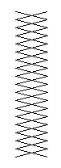
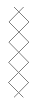

消えうせた大学生
五月のある日のこと、
ふさふさとした白いかみを、オールバックにして、白い口ひげをはやした、やせがたで、背のたかい、りっぱな老紳士です。
この人は
明智探偵は、ある会で松波博士とあったことがあるので、知りあいのあいだがらでしたが、その有名な老学者が、とつぜんたずねてきたのです。
とりつぎに出た
「明智さん、わたしのつとめている古代研究所に、みょうなことがおこりましてね。きょうは、あなたのお知恵をかりようとおもって、うかがったのです。」
松波博士はいすにかけると、すぐにそう口をきりました。
「みょうなことと言いますと？」
明智がたずねますと、博士は話しはじめました。
「古代研究所は、ついこのごろ、世界にたった一つという、古代エジプトの
ところが、この巻き物には、おそろしい、いいつたえがあるのです。それのおいてある部屋には、なにかしら、ふしぎなことがおこるというのです。イギリスでも、いろいろ気味のわるいことがおこったらしいのですね。それで、この巻き物の持ち主がこわくなって、売る気になったのです。
木下さんは、この宝物を、日本のお金にして、たった三十万円ほどでゆずりうけてきたのですが、ほんとうは、その何倍、何十倍の値打ちのものです。
さて、この巻き物を、研究所のエジプトの部屋へおさめたのですが、すると、たちまちおそろしいことがおこりました。
きのうのことです。研究所へひとりの大学生がやってきました。そして、エジプトの部屋においてあるミイラの
すると、この大学生が、部屋にはいったまま、消えてしまったのです。人間がひとり、とけてなくなってしまったのです。なにも、ふんしつしたものはありません。あの巻き物も、ちゃんと、もとの場所にありました。」
明智探偵も、そばで聞いていた小林少年も、このふしぎな話に、すっかりひきつけられてしまいました。
「その大学生は、だれもしらないうちに、出ていったのではありませんか。」
明智がいいますと、松波博士は、頭をふって、
「いや、そんなことはできません。
「窓から出ることはできませんか。」
「窓は五つありますが、みんな、げんじゅうに、鉄ごうしがはまっていて、ぜったいに出られません。そのほか、部屋の中には、どこにも、かくし戸なんかないのです。ぬけ出すすきまはぜんぜんないのです。」
「そのエジプトの部屋には、いろいろなものがおいてあるのでしょう。そういうものの中に、かくれることはできませんか。たとえば、ミイラの棺なんか、人間がかくれようとおもえば、かくれられるのでしょう。」
「むろん、ふたをあけてしらべました。しかし、棺の中にはミイラのほか、なにもはいっていなかったのです。」
「これは密室のなぞですね。まったく出入り口のない部屋から、どうして人間が消えてしまったかというなぞですね。エジプトの巻き物ののろいなんてことは、しんじられません。これにはなにか、秘密のわけがあるのです。その赤井という小使さんは、うそをいっているのではないでしょうね。」
「いや、うそはいえないのです。」
「えっ、それはどうしてですか。」
「わたしが、この目で見ていたからです。」
「と、言いますと？」
「わたしの部屋の窓は、十メートルほどへだてて、エジプトの部屋のドアと、むきあっているのです。
そのあいだは、廊下になっていて、その廊下の右がわにも、左がわにも、一つずつ部屋があるのですが、そのドアは、りょうほうともしまっていたので、わたしの部屋の窓から、エジプトの部屋のドアまで、なんのじゃまになるものもなかったのです。
わたしの机は、その窓ぎわにあるので、そこにこしかけていれば、しぜんに、エジプトの部屋のドアが、見えるのですよ。
大学生がエジプトの部屋にはいったときは、ちょっと、席をはずしていたので、わたしは見ておりません。
席にもどると、むこうのドアの外に赤井君が立っているのが見えました。それで、だれか、外から来た人が、エジプトの部屋にはいっているんだな、とおもいました。そういうときには、いつも赤井君が見はり番をすることになっていましたからね。
大学生が、なかなか出てこないので、赤井君は、待ちくたびれて、ドアをあけて中をのぞきました。すると、大学生が、入口までやってきて、ドアの中から赤井君に、なにかいっていました。もうすこし、待ってくれというのでしょう。赤井君はうなずいて、またドアをしめました。
それからまた十分ほどたって、赤井君がもう一度ドアをあけてみると、こんどは、部屋はからっぽになっていたのです。大学生は消えてしまったのです。
赤井君が二度目にドアをあけるときまで、わたしは、一度もそのドアから目をはなしませんでした。だから、大学生が、ドアから出ていかなかったことは、たしかなのです。そのドアのほかに出入り口はありません。五つの窓は、げんじゅうな鉄ごうしです。大学生は消えてしまったとしか、考えられないではありませんか。」
松波博士が、そこでことばをきると、明智探偵はモジャモジャの頭に、指をつっこんで、かきまわしながら、しばらく考えていましたが、ふと、顔をあげて、
「その大学生は、金ボタンの制服を着ていましたか。」
「いや、黒っぽい背広でした。」
「赤井さんは、どんな服を着ていましたか。」
「やっぱり、黒っぽい古い背広です。」
「時間は何時ごろでしたか。」
「四時ごろでした。もう、うすぐらくなっていました。」
「警察にも、おしらせになったのでしょうね。」
「しらせました。警官がきて、ねんいりにしらべてくれましたが、なんの手がかりもありません。人間が消えてしまうなんて、そんなばかなことがあるものかと、わたしたちのいうことを、うたがってさえいるようでした。」
明智探偵は、そこでまた、しばらく、考えていましたが、やがて、決心したように言うのでした。
「わかりました。おさしつかえなかったら、これからすぐ研究所へいって、しらべてみましょう。小林君もいっしょにきたまえ。」
小林少年の冒険
明智探偵と小林少年は、松波博士のあんないで、古代研究所の大きなたてものにはいり、エジプトの部屋を、すみからすみまで、しらべましたが、秘密の出入り口などは、すこしもないことがわかりました。窓の鉄ごうしも、とりはずしたあとなど、まったくないのです。
明智探偵は、一時間もかかってしらべ終わると、小林少年をそばへよんで、なにかひそひそとささやいていましたが、向こうに立っていた松波博士のところへいって、こんなことをいいました。
「松波さん、わたしは、巻き物ののろいなんて信じることができません。ひとつ、こんばん、実験をやってみたいと思いますが、どうでしょうか。」
「実験といいますと？」
「ここにいる小林君が、エジプトの部屋で、夜あかしをして、ためしてみたいというのです。小林君まで消えてしまってはたいへんですが、けっして、そんなことはおこらないとおもいます。ひとつ実験をさせてみようではありませんか。」
それを聞くと、松波博士は、
「それは、きけんではありませんか。わたしは、小林君の身の上をうけあうことはできませんよ。」
「いや、わたしが責任をもちます。この小林君は、これまでにいろいろな事件で、いのちがけの冒険をやっていますから、だいじょうぶです。知恵もすばやくはたらきますし、力も強いのです。それに、わたしには、ちょっと、考えていることもありますから、けっして、あぶなくないようにします。」
そうして、しばらく押し問答をしたあとで、いよいよ、小林君がたったひとりで、そのばん、エジプトの部屋で夜あかしをすることにきまりました。
午後九時、小林少年はただひとりで研究所へやってきて、松波博士といっしょに、エジプトの部屋にはいりました。小使の赤井さんも、そこへついてきていました。
「赤井さん、外からドアに、かぎをかけてください。そうすれば、だれもはいってこられませんからね。かぎは赤井さんが、持っているきりなんでしょう。もし、あいかぎがあるのだったら、それも赤井さんが、持っていてください。」
小林少年は、みんなが部屋を出ていくまえに、そういって、ねんをおしました。
やがて、ふたりのおとなが出ていってしまい、ドアには、外からピチンとかぎがかけられました。
小林君はこうして、エジプトの部屋に、とじこめられてしまったわけです。
部屋のすみに、大きなデスクがあって、そのまえに、かわをはった回転いすがすえてあります。小林君はそのいすにかけて、ぐるっと、部屋の中を見まわしました。
一方の
一方の壁には、大きなたながおいてあって、土の中からほり出した古代エジプトのいろいろのしなものや、その
てんじょうからさがったまるい電灯が一つ、そのほかには、大デスクの上の、青いかさのある卓上電灯だけです。部屋がひろいので、それだけの光では、うすぐらくて、すみずみには黒いかげができています。
窓の外は、まっ暗です。庭にしげっている木が、黒い魔物のように見えています。大デスクの上には、古い外国の本が、らんざつにつみあげられ、そのまえに、古い置き時計が、カチカチと時をきざんでいます。
シーンと、しずまりかえって、遠くの大通りをはしる電車や自動車の音が、かすかに聞こえてくるほかには、なんのもの音もありません。
だんだん夜がふけてきました。
奇怪な巻き物ののろいはどんなあらわれかたをするのかわかりません。むこうの
小林少年は、その黒っぽい銀の箱を、じっと見つめていました。長いあいだ、そうして見つめていますと、ボーッと目がかすんできて、あたりがうすぐらくなり、銀の箱だけが、スポットライトをあてたように、白っぽく見えるのです。
「あっ！ 動いた！」
銀の箱が、スーッとうごいたのです。
小林君は驚いて、見なおしました。目をこすって見なおしました。
箱は、やっぱりもとの小テーブルのまんなかにあります。いまのは目のまよいだったのでしょうか。
時計の針は十時をすぎ、十一時をすぎ、十二時にちかづいていました。じつに、長い長い時間でした。ひと月もたったかと思われるほどでした。
小林君は、ときどきいすから立って、部屋の中をあるきまわりました。そして、またもとのいすにもどるのです。
どこかでキーッと、みょうな音がしました。なんだかミイラの棺のふたが、動いたような気がします。ふたのあいだから、はみ出している白いきれが、風もないのに、かすかにゆれているではありませんか。
さすがの小林少年も、だんだん、気味がわるくなってきました。うっかり目をそらしていると、うしろから、怪物がしのびよってくるような気がします。
壁いっぱいの本だなの、本のあいだから、やせほそった人間の手が、ニューッと出てくるのではないかとおもうと、水をあびたように、背中がつめたくなってきました。
やみの中の手
パッ、パッ、パッ……、たった一つの電灯が、またたきをするように、消えたり、ついたりしました。
はじめは、ゆっくり、またたいていましたが、やがて、だんだんはやくなり、パチ、パチ、パチ……、ほんとうに、怪物がまたたきしているようです。
小林君は、おもわずいすから立ちあがって、身がまえをしました。おそろしい、ばけものでもあらわれてくるのではないかと、思ったからです。
電灯がまたたくたびに、部屋の中のいろいろなものが、動くような気がします。
むこうの壁に、たてかけてあるミイラの棺のふたが、半分ひらいて、そこから白いきれが、幕のようにあらわれています。ミイラの頭の上から、かぶせてあるきれが、はみ出しているのです。
その白いきれが、風もないのに、フワフワとゆれ動きました。
ミイラが、動き出したのでしょうか。いまにも、ああ、いまにも、黒いミイラが、あのふたを、もっとひらいて、こちらへ、歩き出してくるのではないでしょうか。
そればかりではありません。さっきは、本だなの本のあいだから、やせた手が出てくるようにおもいましたが、おなじような手が、あちらからも、こちらからも、ニューッ、ニューッとつき出してくるような気がするのです。
テーブルの下からも、ミイラの棺からも、たなにならべてある
電灯がパッときえるたびに、ちがったところから、その手が出てくるように思われるのです。
その手は、みんな、テーブルの上の巻き物の箱をねらっているようで、そのほうへグングンのびてくるのです。そのうちの一本の手は、一メートルも二メートルも長く長くのびて、いまにも、銀の箱にさわりそうになるのです。
むろん、ほんとうに手が出たわけではありません。電灯がパッパッとまたたくので、気のせいで、ありもしないものが見えたのです。
さすがの小林少年も、もう、がまんができなくなって、ドアのほうへ、走っていって、いきなり、ドアをドンドンとたたきました。
小使の赤井さんが、その音を聞けば、かぎをもって、ドアをあけにきてくれるだろうと思ったからです。
ところが、小林君がドアをたたきますと、まるで、それが、あいずででもあったように、パッと電灯がついて、そのまま消えなくなりました。またたきをやめてしまったのです。
電灯がつけば、もう、おそろしいまぼろしは見えないでしょう。小林君は、やっと安心して、もとのいすにこしかけました。
巻き物の銀の箱は、ちゃんと、テーブルの上にあります。
小林君は、その箱をじっと見つめて、身動きもしません。
もう、真夜中の一時でした。あたりは、いよいよ静まりかえり、世の中の生きものが、みんな死にたえて、小林君たったひとりになってしまったような、なんともいえないさびしさです。
これで、朝まで、ぶじにおわるのでしょうか。何か、ほんとうにおそろしいことが、これから、おこるのではないでしょうか。
白と黒
しばらくすると、そのほんとうのおそろしいことがおこりました。
電灯が、また消えたのです。そして、こんどは消えたまま、つかなくなったのです。まるで、黒ビロードをはりつめたような、しんのやみです。
何も見えません。めくらになってしまったようです。
すると、目の前に、黄色や、赤や、
みなさんも、目をつむったとき、そういう色が見えることがあるでしょう。目のおくの神経の作用ですね。あれが、いま、やみの中の小林君の目の前に、ひじょうにはっきりした色で、あらわれたり、消えたりしているのです。
そのとき、あたりの空気が、うごくような気がしました。窓もドアも、ぴったりしめてあるのに、どこからか、かすかに風がふいてくるのです。
おばけの話をよむと、おばけが出るときには、どこからか、なまぐさい風がふいてくると書いてあります。これはそのおばけのまえぶれの風でしょうか。
でも、べつになまぐさくはありません。ごくかすかな空気のうごきが、ほおにかんじられるばかりです。
そのころは、もう、目がやみになれていたので、部屋の中の白っぽいものは、ぼんやりと見えるようになっていました。
テーブルの上の巻き物の銀の箱もうっすらと、見えているのです。小林君は、目をいっぱいに開いて、その箱をにらみつけていました。
すると、その銀の箱のまんなかのへんが、とつぜん、なんかでかくされたように、見えなくなったではありませんか。まんなかが黒くなって、銀の箱が二つに割れたように見えるのです。
黒い手が、銀の箱を、つかんだのではないでしょうか。
あっ、ごらんなさい。銀の箱が、動いています。テーブルの上を、スーッと、すべっていきます。そして、テーブルの外までいっても、下へ落ちないで、
ああ、わかりました。まっ黒な手が、どこからかあらわれて、銀の箱をつかんで、もっていくのです。
いや、手ばかりではありません。何か、ぜんしんまっ黒なやつが、そこに立っているようです。まっ黒な怪物が巻き物をぬすみにきたのです。
「あっ、きさま、なにものだっ！」
小林君は、
たしかに、手ごたえがありました。人間の暖かいからだです。そいつは、まっ黒なきれを、頭からかぶって、手もそのきれに包んで、巻き物の箱を、
「どろぼうっ、まてっ！」
小林君は、その目に見えないやつに、くみつこうとしましたが、あっとおもうまに、おそろしい力ではねとばされ、しりもちをついてしまいました。
そのときです。部屋のむこうの壁ぎわで、また、ふしぎなことがおこりました。ミイラの棺から、はみ出していた白いきれが、だんだん大きくなって、フワフワと、こちらへ近づいてきたのです。
ミイラが棺のふたをひらいて、歩き出したのでしょうか。そんなことがおこるはずはありません。では、いったい、どうして白いきれを、からだにまきつけた人間みたいなやつが、こちらへ、近づいてくるのでしょう。
小林君は、しりもちをついたまま、むねをドキドキさせて、やみの中を見つめていました。
すると、白いおばけが、サーッとやみの中を走って、黒いおばけにとびかかっていったようです。目には見えないけれども、黒いおばけも、これに立ちむかって、とっくみあいをはじめたようです。
銀色の巻き物の箱が、宙に浮いて、あっちへいったりこっちへいったりしています。白と黒のおばけが、箱のとりっこをしているらしいのです。
それから、おそろしい音を立てて、とっくみあいが始まりました。白いおばけと黒いおばけの、死にものぐるいの大格闘です。
バタンバタンと、おそろしい音が聞こえ、部屋の中を、ゴロゴロころがって、とっくみあっているのです。
「さあ、つかまえたぞ。小林君、スイッチをおしてくれっ！」
ああ、その声は明智探偵でした。白いおばけが、黒いおばけを、くみふせているらしいのです。すると、白いおばけは明智先生だったのでしょうか。
小林君は、ドアのそばの壁にある電灯のスイッチのところへ、手さぐりでちかづいて、それをおしました。しかし、電灯はつきません。もっと元のほうのスイッチが、きってあるのでしょう。
小林君はドアをたたいて、助けをよぼうとしました。そして、ドアをさぐりますと、あらっ、いつのまにか、ドアが開いているではありませんか。
小林君は外の廊下へ、とび出していって、大声で叫びました。
「だれかきてくださーい。エジプト室にどろぼうがはいったのですっ。」
なんども、叫んでいますと、だれかが階段を上がってくる音がして、廊下の向こうが、ボーッと、明るくなりました。懐中電灯を持った人がかけつけてきたのです。
その人が廊下へ、あらわれたのを見ると、所長の松波博士でした。博士は、今夜は、巻き物のことが心配なものですから、下の宿直室にとまりこんでいたのです。
「おお、小林君、何ごとです。どろぼうとは、何者です。」
「わかりません。明智先生が、どこかからあらわれて、どろぼうをつかまえたらしいのです。……元のほうのスイッチがきってあります。先生、それをいれてください。」
「よし、待っていたまえ。」
松波博士は、懐中電灯を小林君にわたして、もう一度階段をかけおりていきました。
ドアの秘密
博士が元のスイッチをいれたので、部屋の電灯がつきました。
「あっ、きみは小使の赤井君だなっ。」
白い怪物がさけびました。くみしいた黒い怪物のかぶっていたきれを、めくりとると、その下からあらわれたのは、黒背広をきた赤井の姿だったのです。
「明智さん、よくやってくださった。それじゃ、その赤井が、エジプトの経文を盗もうとしたのですね。」
部屋にはいってきた松波博士が、白い怪物に、声をかけました。
からだに白いきれをグルグルまきつけて、エジプトのミイラとそっくりの姿をした怪物が、じつは明智探偵だったのです。かれはその姿で、ミイラの箱の中にかくれて、わるものがやってくるのを、まちぶせしていたのです。
小林少年は、なにも知らされていなかったので、松波博士が、「明智さん。」とよびかけるのをきいて、びっくりしました。
「さては、明智先生は、松波博士と相談して、ぼくがエジプトの部屋にはいるまえに、ミイラの箱の中にかくれていたんだな。ぼくがそれを知っていると、そのことが、顔色にあらわれて、犯人を用心させるので、わざとしらせなかったのだろう。」
小林君は、とっさに、そこへ気がつきましたが、しかし、まだわからないことがあります。松波博士もおなじことをかんがえていたとみえて、そのとき、明智にむかって、こんなふうにたずねました。
「赤井が犯人なら、電灯の元のスイッチを、入れたりはずしたりできたし、また、この部屋のかぎをもっているのだから、しのびこむのも、ぞうさなかったわけです。しかし、まだ、わからないことがありますよ。きのう、大学生が、この部屋の中で、きえてしまった秘密です。明智さんには、あの秘密もわかっているのですか。」
明智探偵は、どこからか、ほそびきをとり出して、犯人赤井の手と足をしばった上、そこのいすにからだをくくりつけていましたが、それがおわると、こちらへ近づきながらこたえました。
「それは、わかっていました。昼間、この部屋をしらべたときに、その秘密を発見したのです。しかし、それをいってしまうと、犯人が用心して、経文をぬすみにこなくなるので、わざとだまっていたのです。そして、犯人をゆだんさせて、こんや、しのびこんでくるのを、まちぶせしたのです。こいつは、まんまと、そのわなにかかったわけですよ。」
「しかし、わたしには、まったくけんとうもつきませんなあ。いったい、どんな秘密があったのです。さしつかえなかったら、おしえてくださらんか。」
「かんたんなトリックですよ。こいつはもうにげられっこありませんから、警察を呼ぶ前に、その秘密をお見せしましょう。それでは、先生は、廊下のつきあたりの、あなたの研究室にはいって、ガラス窓から、このドアを見ていてください。小林君も先生といっしょに、見ていなさい。」
そこで、博士と小林少年は、廊下のつきあたりの博士の研究室にはいり、ガラス窓ごしに、エジプト室のドアを見はることになりました。そのガラス窓からエジプト室のドアまでは、十メートルほどへだたっているのです。廊下に電灯がついているので、ドアはよく見えます。
じっと見ていますと、廊下に出ていた明智探偵は、一度エジプト室へはいって、三十秒ほどすると、また廊下へ出てきました。そして、ドアをひらいたままにして、むこうをむいて、部屋の中をのぞいています。
すると、あっとおどろくようなことが、おこりました。
ドアの中にひとりの男が立っているではありませんか。犯人の赤井は、いすにくくりつけられているのですから、そんなところへ、出てこられるはずはありません。すると、あれは何者でしょう。部屋の中へ、ひょっこり、ひとりの男がわきだしたのです。
きのうは、大学生が、消えてしまいましたが、こんやは、そのぎゃくに、なんにもないところから、ひとりの人間があらわれたのです。
明智探偵は、その男と、しばらくひそひそと話していましたが、こちらをむいて、うなずいてみせると、そのまま、部屋の中にはいって、中からドアをしめました。
博士と小林君は、それを見ると、じっとしていられなくなって、研究室を出て、エジプト室のほうへいそぎました。
すると、明智探偵は、またドアをあけて、ふたりを部屋の中へ、むかえいれながら、
「たしかに男が立っていたでしょう。ところが、ごらんなさい。部屋の中には、赤井君のほかには、だれもいないのです。」
といって、にこにこわらっています。
部屋のむこうのすみには、赤井がいすにしばられたまま、こわい顔で、こちらをにらんでいました。
「まさか、いまのは赤井だったのではないでしょうね。」
博士がふしぎそうにいいました。
「そうじゃありません。いくら手ばやくやっても、あのほそびきをといて、またもとのようにしばる時間はなかったですよ。赤井ではない人間が、あらわれたのです。」
「そして、その人はどこへいったのです。」
「消えてしまったのです。きのうの大学生のようにね。」
「わかりませんなあ。じつにふしぎだ。こんなばかなことがあるはずはない。」
博士はこまったような顔をして、きょろきょろと、あたりを見まわすのでした。
「ハハハハ……、なんでもないことですよ。これをごらんなさい。」
明智探偵はそういって、ドアのそばへ近づきました。
では、このドアに、秘密の種がかくされているのでしょうか。そうだとすれば、いったい、どんな秘密なのでしょう。読者のみなさん、つぎを読むまえに、ちょっと考えてみてください。
電話の声
明智探偵は、ドアを廊下のほうへひらいて、内がわのドアの板をちょっと指でおしますと、パチンとおとがして、ドアの中から、もう一まいドアがひらいてきました。つまりそのドアは二重になっていたのです。
明智はそれを、ぜんぶひらいて見せました。ドアのちょうつがいのそばに、もう一つ、かくしたちょうつがいがあって、図のようにひらくしかけになっていました。そして、ドアからひらいた、もう一まいのドアの内がわは、大きな鏡になっていたのです。
そのもう一まいのドアは、うすい

「ちかごろ、このドアをなおさせたことはありませんか。」
明智がたずねますと、松波博士は、なにかおもいあたったように、うなずきました。
「そういえば、十日ほどまえに、ドアをとりかえたのです。どういうわけか、このドアは、わくがゆがんでしまって、うまくしまらなくなったので、べつのドアをつくらせてとりかえたのです。」
「そのドアのちゅうもんは、だれがやったのですか。」
「赤井です。そういうことは、みんな赤井のしごとになっています。」
「それじゃ、赤井君が、こんなしかけのあるドアをつくらせたのです。それには、かなり金をつかったことでしょう。人間を消してしまう手品の種ですからね。」
「あっ、すると、この鏡に……。」
「そうですよ。きのうは、廊下に立っている赤井君の姿が、この鏡にうつったのです。赤井君も大学生も黒い服をきていたし、廊下がうすぐらいので、あなたの研究室の窓からは、顔なんかハッキリ見えません。ですから、鏡にうつった赤井君を、大学生とおもいこんでしまったのですよ。先生は、エジプト室に大学生がいるものと信じておられたのですからね。」
赤井君は、そうして、エジプトの経文ののろいというものを、つくりあげたのです。この部屋にはあやしいことがおこると信じこませたのです。
しかし、こんなしかけのドアをつくらせるのには、小使の給料なんかでできることではありません。赤井は何者かが小使にばけていたのです。ほんとうは、おそろしい大どろぼうかもしれません。
「ふーん、たいへんなしかけをしたもんですね。すると、いま明智さんが話していた男は、この鏡にうつった明智さんのかげだったのですか。鏡のかげなら、消えうせるのは、わけはない。この二重のドアをしめて、もとの一まいのドアにしてしまえばいいのですからね。」
小林少年も、ドアのしかけを見て、すっかりかんしんしてしまいました。
「先生、それじゃ先生は、昼間ここをしらべたとき、ちゃんと、このしかけに気づいていらしったのですか。」
「そうだよ。しかし、松波先生にも、きみにも、だまっていた。このしかけがわかったとなると、犯人がにげてしまうからね。」
むこうのいすにしばられている赤井が、なんだか、急におそろしくなってきました。年とった小使だとおもっていたのが、うでっぷしのつよい、大悪人に見えてきました。
「すぐに一一〇番へ電話をかけます。そして、こいつを警察にひきわたしましょう。」
松波博士は、そういって、部屋をとび出していきましたが、むこうの研究室で電話をかけて、まもなくもどってきました。
「こいつのしらべは、警察にまかせましょう。そうとう有名な大どろぼうにちがいありませんよ。」と、明智。
「しかし、おかげで、エジプトの経文はたすかったし、どろぼうはつかまえることができました。やっぱり明智さんにおねがいして、よかったとおもいます。」
銀の箱にはいった経文は、ちゃんと、もとの小テーブルの上にのっていました。
話しているうちに三分ほどたちましたが、すると、もう、おもての通りにサイレンのおとがして、一台のパトカーが門のまえにとまりました。
小林君が下へおりていって、玄関のドアをひらき、ふたりの制服の警官をつれて、エジプト室へもどってきました。
警官たちは、明智探偵の顔をしっているらしく、ていねいに
松波博士はエジプト室のドアに、外からかぎをかけて、明智探偵と小林少年を、研究室へあんないして、しばらく話をしていますと、この真夜中に、デスクの上の電話が、けたたましくなり出したではありませんか。
博士が電話に出ますと、せんぽうは、
「明智探偵を電話に出してくれ。」
というのです。明智がかわって受話器をとりました。
「もしもし、明智君かね。アハハハ、じつに愉快だねえ。おれを誰だとおもう。あててみたまえ。」
受話器から、そんなしわがれ声が、とび出してきました。
明智探偵の顔色が、サッとかわりました。
「だれだっ、きみはだれだっ。」
「ウフフフ……、赤井だよ。おれはもう、自由の身だよ。さっきのパトカーのおまわりは、にせものだったのさ。ハハハハ……、明智君ともあろうものが、とんだ手ぬかりだったねえ。いや、まて、もうひとつきみをびっくりさせることがある。赤井なんて、おれのほんとうの名まえじゃない。え、わかるかい。おれは二十の顔をもつ男さ。ウフフフ……、きみたちが怪人二十面相とよんでいる大どろぼうさ。」
そして、電話はプツンときれました。
電話の秘密
明智が受話器をおいて、そのことを伝えると、所長の松波博士と、小林少年は、顔を見合わせて驚きました。
「しかし、わたしは、さっき、あちらの部屋の電話で、たしかに一一〇番へかけたのですが、そうすると、ほんとうのパトカーは、まだやって来ないのでしょうか。」
松波博士が、ふしんそうに、つぶやきました。
「そんなはずはありません。さっきから、ずいぶん時間がたってます。パトカーがそんなにおくれるはずはありません。これにはなにかわけがあるのです。」
明智はそう言って、前にある電話のダイヤルを回して、受話器を耳にあてていましたが、
「おかしい、電話が故障のようです。調べてみましょう。」
といって、エジプト室からかけ出すと、むこうの博士の研究室にはいって、そこの電話をかけてみましたが、これもだめなことがわかりました。
明智はそれから、電話線を調べたり、窓を開いて、暗い庭をのぞいたりしていましたが、なにを思ったのか、いきなり、部屋を飛び出して、階段をかけおり、庭へ出ていくのです。
庭のすみに小さい物置小屋があります。明智は用意していた懐中電灯をつけて、その小屋の戸を開き、中をのぞきこみました。
「あっ、ここです。ここに電話器があります。」
と叫びました。
「二十面相は、あの二つの電話の線を切って、別の線でこの電話につないでおいたのです。そして、ここに部下を待たせておいて、一一〇番の警官のような声で、答えたのです。ですから、ほんとうの一一〇番へは、電話はかからなかったのですよ。」
これで、ほんもののパトカーが、来ないわけがわかりました。
「いつのまに、こんな準備をしたのか、おそろしいやつです。」
松波博士は、あきれかえって、つぶやくのでした。
小林少年は明智探偵のさしずで、門の外へかけ出していって、赤電話で、警視庁にこのことを知らせました。
博士と明智探偵は、もとのエジプト室にもどって、話し合っていました。
「それにしても、エジプトの巻き物が助かったのは、ありがたいです。犯人には逃げられたけれども、巻き物の箱はちゃんとここにありますからね。
まったく明智さんのおかげです。」
松波博士は、テーブルの上の銀の箱をひらき、中に巻き物がはいっているのを確かめながら、お礼を言うのでした。
「しかし、まだ油断はできません。こんどは、どんな手で盗み出しにくるかもしれません。できるなら、このエジプト室には、銀の箱だけをおいて、中の巻き物はべつの箱に入れて、どこか、ほかの場所へかくしたほうがいいのですがね。」
明智が言いますと、博士もうなずいて、
「わたしも、それを考えていたところです。わたしは
「そうなさったほうがいいでしょう。なるべく目だたない、つまらない木の箱に入れてね。」
それからしばらくすると、警視庁の
さて、木箱に入れた巻き物の運命はどうなるのでしょう。むろん、二十面相は、それを盗み出すことをあきらめてはいません。やがて、また、二十面相はふしぎな魔法をつかい、なんとも、えたいのしれない、恐ろしいことをはじめるのです。
それから三日目の夜、松波博士の新しい家の中で、ふしぎなできごとがおこったのですが、それを見たのは、博士邸のとなりに住んでいる
生きた手首
西村正一君は小学校の六年生ですが、その晩、二階にある自分の勉強部屋で、宿題をやっていました。
窓のむこうに、おとなりの松波博士の新築の家の二階が見えます。十メートルぐらいしか、はなれていないのです。そこに見えるのは、広い洋室で、まだ、壁紙をはったばかり、なにも道具のおいてない、がらんとした部屋です。たった一つ部屋のまんなかに、小さい丸テーブルがおいてあるばかりです。しかし、電灯はりっぱなのが、ちゃんとついています。てんじょうからガラス玉のたくさんついたシャンデリヤがさがって、部屋の中をあかあかと照らしているのです。
窓には四枚の大きなガラス戸が、ピッタリしまっていますが、一枚のガラス戸なので、中は手にとるように見えます。
その部屋には、ずっと、だれもいず、電灯だけがついていたのですが、しばらくすると、むこうがわの壁の左のはしにあるドアがあいて、ひとりの上品な老人がはいってきました。正一君は知りませんでしたが、それは主人の松波博士なのです。いま、研究所から帰ってきたのかもしれません。
老博士は、小さな木の箱をだいじそうに、持っていましたが、それを、部屋のまんなかのテーブルの上において、ふたを開こうとしています。そのとき、ドアの外から、だれかが呼んだらしく、博士はそのほうをむいて、なにかいっているようすで、しきりに口を動かしていましたが、「うるさいなあ。」というような顔で、いそいで、ドアの外へ出て行きました。
木の箱はテーブルの上にのせたままです。すぐもどってくるつもりで、そのままにして出ていったのでしょう。
しかし、博士はなかなかもどってきません。道具のない部屋はガランとして静まりかえっています。壁紙が新しいので、電灯の光が、いやに明るく見えるのです。
正一君はこちらの勉強部屋の窓から、じっとそこを見ていました。
「きっと、いまに、なにか起こるぞ。」
というような、みょうな感じがしたからです。
すると、はたして、むこうの明るい部屋の中で、なんともいえない、ふしぎなことが起こりました。
小さなテーブルの上に、とつぜん、白っぽい物があらわれたのです。そして、そいつが、そこにおいてある木の箱のほうへ、スーッと、はいよっていくのです。
大きな虫でしょうか。いや、そうではありません。
あっ、手です。人間の手です。人間の手だけが、テーブルの上をはっているのです。
テーブルには三本のあしが、ついているのですが、そのあしのむこうには、壁紙が見えています。ですから、テーブルの下には、だれもかくれてなんかいないのです。人間のからだはなくて、ただ手首だけが動いているのです。
正一君は、おばけでも見たように、ゾーッとしました。からだから切り離された手首だけが、生きて動いているなんて、そんなことが考えられるでしょうか。
しかし、まさに、そいつは人間の手首でした。それが大きな虫のように、木の箱のほうへ、はいよっていくのです。
あっ、とうとう、箱をつかみました。そして、パッと、その手を上にあげたかと思うと、そのまま、箱も手首も、かき消すようになくなってしまいました。
手首だけが、箱を盗んだのです。そして、消えてしまったのです。
正一君は、おそろしい夢でも見たような気がしました。しかし、夢ではありません。
むこうの二階では、たしかに、おばけのようなふしぎが起こったのです。
正一君は、急いで部屋を出ると、階段をおりて、おとうさんの書斎へはいっていきました。そして、いまのできごとを話したのです。
おとうさんの西村さんは、それを聞くと笑いだして、
「そんなばかなことがあるもんか。おまえは、まぼろしでも見たんだろう。」
と、とりあってくれません。
「いいえ、まぼろしじゃありません。確かに見たのです。おとうさん、二十面相かもしれませんよ。」
「えっ、二十面相だって？」
さすがに西村さんも、びっくりしました。
「おとなりは松波博士のうちでしょう。松波博士の古代研究所へ、このあいだ二十面相がしのびこんでいたというじゃありませんか。ひょっとしたら、あの消えた木の箱の中には、エジプトの巻き物がはいっているのではないでしょうか。」
正一君は、かしこい少年でした。早くも、そこまで、察していたのです。
それをきくと、西村さんも、すてておくわけにはいきません。新聞で古代研究所の事件を読んでいたからです。
「それじゃ、これから、おとなりへおまえといっしょに行って、おまえの見たことを、お知らせしてあげようか。」
「ええ、それがいいと思います。」
そこで、西村さんと正一君とは、つれだって、松波博士の新しいすまいを、たずねることになりました。
いって見ると、博士のうちは、大さわぎでした。
松波博士の奥さんは、ずっと前になくなって、子どももなく、うちには書生と、ばあやと、女中さんがいるだけですが、その四人が、あっちへいったり、こっちへいったり、家の中をうろたえ回っているのです。
それでも、おとなりの西村さんが、たずねてきたとわかると、松波博士は西村さんたちふたりを、一階の応接間へ、通しました。この部屋は、二階と違って、いろいろな道具がりっぱにならんでいます。
「おまえが見たことを、お話してごらん。」
西村さんに言われて、正一君は、さっきのふしぎなできごとを、くわしく話しました。
すると、松波博士はうなずいて、
「ああ、そうでしたか。それでわかりました。じつは、わたしも、箱をつかんでいる手首を見たのです。けっして正一君はまぼろしを見たのではありません。」
「じゃ、先生も、あのとき、ドアの外から見ていたんですか。」
正一君がたずねました。
「いや、あの部屋で見たのではありません。階段です。階段を、箱をつかんだ手首だけが、宙に浮いて、フワフワと降りてきたのです。ばけものです。わたしは、驚いて、そのあとを追いました。
しかし、手首は、わたしの手をスーッとかわして、階段を降りると、廊下を玄関の方へ、飛んでいくのです。フワフワと、宙を浮きながら、恐ろしい早さで、飛んでいくのです。
玄関のドアが、ひとりでにスーッと開きました。そして、そこから、手首は、外へ出て行ってしまいました。むろん、箱をつかんだままです。
あの箱の中には、だいじなエジプトの巻き物がはいっているのです。
わたしは、夢中になって、追っかけました。しかし、わたしが外へ出たときには、手首も箱も、もう見えなくなっていました。
なんだか、スーッと空たかく、舞いあがってしまったような気がします。
それで、警察に電話をかけるやら、私立探偵の明智さんに電話をかけるやら、大さわぎをしていたところですよ。」
そう話し終わって、松波博士は、がっかりしたように、うなだれるのでした。
「先生っ。」
そのとき、正一君が、とんきょうな声をたてました。
「透明人間かもしれませんよ。二十面相は、ずっとまえに、透明人間にばけたことがあります。こんども、その手を使ったのじゃないでしょうか。」
正一君は、少年探偵団員の友だちがあるので、二十面相のことは、よく知っているのです。
ああ、透明人間。二十面相はほんとうに透明人間になる魔力を持っているのでしょうか。そうだとしたら、これから、どんなふしぎなことが起こるのでしょう？
空中の声
目的の品を手に入れた二十面相は、それからひと月ほどの間、どこにかくれたのか、姿をあらわしませんでした。
ところが、ある晩のこと、
恩田さんは
夕ご飯がすみますと、その四人と、ふたりのお客さんが、洋室に集まって、大きなテーブルを囲んでいました。お客さんというのは、恩田さんの会社の社員の
きょうは、恩田さんの誕生日で、ふたりのお客さんを呼んで、いっしょに食事をしたのですが、そのあとで、この部屋に集まって、テーブルの上に置いてあるものを、見ているのです。
それは、美しいゾウの置き物でした。高さ二十センチぐらいのゾウが、全身何千つぶともしれない真珠のたまで、できているのです。ゾウの目には黒っぽい猫目石が、はめてありました。その猫目石一つだけでも、何十万円という値打ちのものです。
ゾウのからだ全体では、どれほどの値打ちがあるかわかりません。
この真珠のゾウは、三ッ木真珠会社が、ずっとまえに、フランスの大きな展覧会に出品したもので、それを恩田さんがゆずりうけて、家宝としているのです。
「わたしは、去年もこれを拝見したが、いつ見てもすばらしいね。ゾウの形が、まるで生きているようだ。この真珠の色がなんとも言えないね。」
親せきの北川さんが、かんにたえないように言うのでした。
「一年に、たった一度しか見られないというところに、値打ちがあります。おうちのかたも、恩田さんの誕生日のほかは、ごらんにならないのでしょうね。」
社員の友田さんが言いました。
そのとおり、ひとりむすこの章太郎君も、おかあさんも、この宝物は、めったに見ることができないのです。
章太郎君は六年生ですが、一年に一度、このゾウを見るのが、楽しみでした。もっと小さいときから、ゾウがだい好きで、ゾウのおもちゃも、たくさん持っていましたが、この宝物のゾウにくらべたら、みんなつまらないものばかりです。
「ふしぎだ。あいつはなぜ、こんな珍しい宝物に気がつかないのかな。」
北川さんが、ふと、変なことを言いだしました。
「あいつって、だれだね。」
恩田さんがたずねます。
「怪人二十面相さ。」
「えっ、なんだって？」
恩田さんは、なにをえんぎの悪いことを言いだすのだと、まゆをしかめました。
「あいつは、珍しい美術品は、決して見のがさない。じぶんのかくれがに、盗んだものばかりで、りっぱな美術館を作っているというじゃないか。このあいだも、古代エジプトの巻き物を盗み出したと、新聞に、でかでかとのっていた。この恩田家の宝物に気がつかぬとは、あいつも、うかつだよ、ハハハ……。」
北川さんは、いやな冗談を言います。
すると、そのときです。北川さんの笑い声の
その笑い声は、いつまでもやみません。
みんなは、ギョッとした顔を、見合わせました。章太郎君のおかあさんなどは、もうまっさおになっています。
「だれだっ！」
家庭教師の山口青年が、いきなり立っていって、ドアを開いてみました。しかし、廊下にはだれもいません。
「ハハハハ……。」
かすかな笑い声が、だんだん大きくなってきました。
山口君は、こんどは、窓から、暗い庭を見回しました。そこにも、人影はありません。
「ハハハハ……、
その声は、なにもない空中から、
「あっ、透明人間だ！」
章太郎君が、気づいて、とんきょうな声で、叫びました。
恩田さんは大急ぎで、真珠のゾウを箱の中に入れると、その箱をだきしめて、いきなり、廊下へ、とび出して行きました。家庭教師の山口青年もその後に続きました。
しばらくすると、恩田さんと山口青年は、もとの部屋に帰ってきました。宝物の箱を地下室の金庫におさめてきたのです。金庫の
「そういえば、わたしのそばに、だれだか立っているような気がしたよ。それが透明人間だったかもしれない。」
北川さんが言いますと、章太郎君のおかあさんも、
「ええ、わたしも、感じましたわ。わたしのうしろを、だれかが、すうっと、通っていったような気がしました。ああ、気味がわるい。まだ、そのへんにいるんじゃないかしら。」
すると、これに答えるように、また笑い声が、起こりました。
「ハハハハ……、ここにいるよ。だが、きょうは、このまま帰る。また、やってくるから、用心するがいいぜ。」
その声が、だんだん、とおざかって行って、どこかへ、消えて行ってしまいました。
「真珠のゾウを盗むつもりなら、いきなり、ひっさらって、逃げ出せばいいじゃないか。それを、ただ、声を聞かせたばかりで行ってしまったのは、おかしいね。もしかしたら、透明人間と見せかけて、どこかに、ラウドスピーカーでもしかけてあって、声だけ聞かせて、おどかしたんじゃないだろうか。」
北川さんが、疑わしそうに言いますので、みんなで、部屋の中を壁からてんじょうから、じゅうたんの下まで、残るところなく、調べましたが、スピーカーのようなものは、どこにも、しかけてないことがわかりました。
宙に浮く花びん
それから、大さわぎになって、恩田さんは、このことを警察に知らせ、家の回りを、見張ってもらうようにしましたが、その晩の夜ふけに、章太郎君の寝室に、またしても、恐ろしいことが起こりました。
その部屋は、章太郎君の勉強部屋と寝室をかねていて、一方の窓ぎわには勉強机や本箱があり、別のすみに、ベッドが置いてあるのです。
章太郎君は九時ごろに、ベッドにはいりましたが、さっきのことが、恐ろしくて、なかなか眠れません。ながい間、もじもじしていましたが、やがて、うとうとしたかとおもうと、こわい夢を見て、はっと目がさめるのです。
そうして、何度めかに目をさましたときです。ベッドから正面に見えている、勉強机の向こうの窓の花模様のカーテンが、フワッと動いたような気がしました。
オヤッと思って、目をまんまるにして、その方を、見つめました。
机の上には、置時計と、きれいな花を
見ていると、ガラスの花びんが、じりっと、動きました。だれかが、手で動かしたような感じです。ギョッとして、目がそこへくぎづけになってしまいました。
すると、ああ、やっぱりそうです。花びんがスーッと、こちらへ、動いてくるではありませんか。
そして、机の
章太郎君はベッドの中で、からだがしびれたようになって、動くことができなくなりました。目をほかに向けようとしても、向けられないのです。
花びんは、机を離れて宙に浮いたまま、しばらくユラユラとゆれていましたが、やがて、だれかに持ち上げられるように、ツーッと上の方へ、のぼってきました。そして、その空中で、フワフワと左右に動いているのです。
ちょうど、そこに、おとなの人がいて、花びんを胸のへんまで、持ち上げたぐらいの高さです。
章太郎君は、その人間の姿が、うっすらと見えるような気がしました。
花びんは、またスーッと下におり、机の上の、もとの場所にもどって、動かなくなりました。しかし、目に見えない人間は、まだそのへんにいるらしいのです。
すると、どこからか、一本の巻きタバコが、現われて、空中で横になったまま、じっとしています。目に見えないやつが、口にくわえているかっこうです。
そのタバコには、いつのまにか、火がついていました。そして、その赤い火が、ほたるのように、パッパッと、光ったり、うすくなったりして、そのたびに、空中から、スーッと、白い煙が、吐き出されるのです。
しばらくすると、人間の顔の高さのへんが、白い煙で、いっぱいになりました。
じつに、なんとも言えない、無気味なありさまです。だれもいないのに、タバコだけが、吸われて、煙が吐き出されているのです。
二分間ほど、タバコは吸いつづけられていましたが、やがて、スーッと、どこかへ消えてしまいました。
しかし、目に見えないやつは、まだ部屋の中にいます。じっと、そこに立って、章太郎君の方を、にらみつけているような気がします。水のようにモヤモヤした姿が、じりじりと、こちらへ、近づいてくるように思われるのです。
章太郎君は、助けをもとめようとしましたが、口が動かなくなってしまって、声を出すことができません。
もがきにもがいて、やっと、かすれた叫び声をたてました。
「た、助けてくれえ……。」
すると、その声に驚いたのか、目に見えないやつは、ドアをあけて、部屋の外へ出ていってしまいました。ドアが、ひとりでにスーッと開いて、また、もとの通りにしまったのです。
まもなく、だれかが、廊下をバタバタと、走ってきて、いきなりドアを開き、部屋の中にとびこんで来ました。
家庭教師の山口さんです。
「章ちゃん、どうしたの、いま叫んだのは、きみでしょう。」
章太郎君は、まっさおな顔で、口をモグモグやるばかりで、なかなかものが言えません。しかしやっと、とぎれとぎれに、いまのふしぎなできごとを、話し出しました。
「ふうん、やっぱり、あいつ、しのびこんで来やがったな。ぼくはあいつと廊下ですれちがったかもしれないんだね。」
山口さんは、恩田さんに知らせると言って、そのまま、部屋をとび出して行きました。
またもや、うちじゅうが大さわぎです。女中さんたちもみんな起きてきて、ふるえています。
恩田さんは、すぐに警察へ電話をかけました。警察からは、ふたりの刑事さんが、やって来て、うちの中を調べてくれましたが、なにしろ、あいては目に見えないやつですから、どうすることもできません。戸締まりを厳重にするようにと言って、帰って行きました。
ふしぎな格闘
怪人二十面相は、透明人間となって、恩田さんの家にあらわれ、家宝の真珠でできたゾウを、盗みだすと宣言しました。それで、恩田さんはいっしょうけんめいに、それを防ごうとしました。
真珠のゾウは、地下室の金庫の中に入れたうえ、その地下室の入口の厚い板のあげぶたにも、厳重にかぎをかけ、家族の者でも金庫のそばへは行けぬようにしました。
恩田さんは、警察にお願いして、ふたりの刑事さんに、恩田家の表門と、裏口のそばを、たえず見回ってもらうことになりました。
ところが、そのあくる日の朝、今度は恩田さんの家の庭で、恐ろしいことがおこったのです。
恩田さんの子どもの章太郎君は、そのとき、自分の勉強部屋の窓から、庭を見ていました。
庭にはいろいろな木が植えてあるのですが、ちょうど章太郎君の窓の正面に、一本のツバキの木があって、その青あおとした葉のあいだに、血のようにまっかな花が、ポツンとたったひとつ、咲いているのです。
章太郎君は、なぜか、その赤い花から、目を離すことができませんでした。妙に、ひきつけられるような気がするのです。
すると、その花が、突然だれかにもぎとられたように、枝から離れました。そして、下に落ちないで、空中をスーッと、動いていくのです。
上から糸でつっているのではありません。もう木のそばを離れているのですから、上にはなにもないのです。
それから、空中をフワフワただよっていたかとおもうと、やがて、じっと、動かなくなりました。
もし、そこに人間が立っているとすれば、ちょうど、その顔のあたりで、止まってしまったのです。
目に見えない人間が、目の前に花を持ち上げて、ながめてでもいるようです。章太郎君は、はっとしました。透明人間に違いないからです。透明人間が、ツバキの花をもぎとって、ながめているのです。
おとうさんに知らせようと、立ちあがったとき、庭の向こうから、だれかやってきました。家庭教師の山口青年です。
山口君も、空中にじっとしているツバキの花に気がついたらしく、ギョッとして立ち止まりましたが、すぐに、気をとりなおして、いきなり、その花に向かって、飛びかかっていきました。
からだとからだが、ぶつかりあうような音が聞こえました。目には見えないけれど、そこには、確かに人間が立っていたのです。
それから、恐ろしいとっくみあいが、始まりました。
山口青年は、なかなか
しかし、相手は二十面相です。そのまま、負けてしまうはずはありません。
山口君が、パッとひっくりかえりました。目に見えないやつが、猛烈ないきおいで、はね起きたのです。
山口君は、また、相手に飛びかかっていきましたが、ガクンとアッパーカットをくらったようにあごをあげてしりもちをつきました。
「ちくしょう。うぬ、逃がすものかっ。」
山口君は、また立ち上がって、組みついていきました。そして、ウンウンいいながら、とっくみあっていましたが、あっとおもうと、山口君のからだが、パッと空中に半円をえがいて、もんどりうって向こうの地面に投げ飛ばされました。目に見えぬやつは、柔道のともえ投げの手を使ったのです。
起きなおろうとするところを、上から乗りかかって、首をしめつけられているらしく、頭を右ひだりに動かして、もがいていましたが、やがて、グッタリとなってしまいました。
「ハハハハ……、まいったか。おれは柔道五段の腕まえだからな。きみなんかに、つかまりやしないよ。」
空中から、そんな声が響いてきました。
そして、ふっと気がついたように、
「あ、そこに章太郎君がいるね。いや、心配しなくてもいい。きみには、なにもしないよ。だが、おとうさんのところへ行って、こう言っておくのだ。いいかね。今夜あたり、あぶないってね。
ほら、真珠のゾウだよ。あれが、今夜なくなるのだ。
そうだな、時間をきめておいてもいいよ。夜の十時にしよう。十時かっきりに、盗みだしてお目にかけるってね。よく言っておくんだぜ。おれは二十面相だ。決して約束はたがえないからね。わかったかね。ハハハハ……、じゃあ、あばよ。」
その笑い声が、だんだん、遠ざかっていって、庭の木立ちの向こうへ、消えていきました。
山口青年は、やっと起き上がりました。章太郎君は、おとうさんに知らせるために、奥へかけ出しました。
それから、表にいるふたりの刑事さんを呼んで、庭じゅうを捜しましたが、相手は目に見えないやつですから、どうすることもできません。もう、どっかへ逃げてしまったのか、まだそのへんにウロウロしているのか、さっぱりわからないのです。
このうえは、地下室の金庫を、みんなが力をあわせて、厳重に、守るほかはありません。
かわいい女の子
章太郎君は小学校の六年生でしたが、その日、学校へ行くと、
「うーん、そいつが二十面相なんだね。それじゃ、ぼくらの団長の小林さんに話してみるといい。二十面相とは、長いあいだ戦ってきたんだから、ぼくらにとっては、憎むべき敵なんだ。小林さんはきっと助けてくれるよ。」
竹内君がそう言うものですから、章太郎君は、学校がひけると、竹内君といっしょに、小林少年のいる明智探偵事務所へ行ってみることにしました。
「ぼく、おうちへ、おそくなるって、電話をかけておくよ。」
町の赤電話の前にきたとき、章太郎君がポケットから十円玉を出して、電話をかけようとしますと竹内君は、
「探偵事務所へ行くなんて言っちゃいけないよ。透明人間はどこで聞いているかわからないからね。ぼくのうちへ、遊びにいくと言っておけばいい。」
とささやき声で、言いました。章太郎君は、言われたとおり、電話をかけて、それからバスに乗って、麹町の明智探偵事務所へ、急ぐのでした。
さいわい、小林少年は事務所にいて、すぐにふたりを、自分の部屋へ通してくれました。
少年探偵団長の小林
こんな子どもが、どうして、あの恐ろしい二十面相と戦えるのかと、ふしぎに思われるほどです。
「ぼくの友だちの恩田章太郎君です。恩田君のおとうさんの宝物を、二十面相が盗み出そうとしているのです。今晩があぶないのです。」
竹内君が紹介してくれましたので、章太郎君は、あいさつをしてから、いままでのことを、くわしく話して聞かせました。
「そうですか、あいつ透明人間にばけたんですね。わかりました。ぼく、ちょっと、明智先生に相談してきますからね、待ってください。」
小林少年は、そう言って、部屋を出ていきましたが、しばらくすると、ニコニコして、もどってきました。そして、こんなことを言うのです。
「やっぱり、先生は偉いなあ。ちゃんと、二十面相のやりかたを見ぬいてしまいましたよ。そして、先生とふたりで、ある計略を考えたのです。
それにはね、恩田君、きみのおとうさんに、明智先生から電話をかけて、打ち合わせをしなければならない。番号を教えてください。」
そこで、電話番号をききますと、小林少年は、また、部屋を出ていきました。
先生というのは、名探偵明智
ですから、明智探偵と二十面相とは、お互いに許すことのできない、かたきどうしでした。それだけに、明智探偵は、二十面相のやりかたが、すっかりわかっているのです。そして、いつも、そのうらをかいて、相手をびっくりさせるのです。こんどはいったい、どんな計略を立てたのでしょうか。
章太郎君たちは、二十分ほども待たされました。明智探偵はおとうさんと、何を話しているのかしらと、思っていますと、入口のドアがスーッとあいて、ひとりのかわいらしい少女がはいってきました。
「いらっしゃいませ。」
少女がそう言って、ていねいに、おじぎをしました。女中さんでしょうか。
ところが、そのつぎには、少女が「わかる？」と、首をかしげて、目で笑ってみせました。
なんだか、変です。章太郎君も竹内君も目をパチクリやっています。
「ハハハハ……、ぼくだよ。小林だよ。ちょっと変装してみたのさ。」
こんどは聞きおぼえのある小林少年の声でした。なんという、うまい変装でしょう。これが小林君だなんて、とても見わけられません。まったく女の子です。
それにしても、小林少年は、なんのために、こんな変装をしたのでしょう。
「じつはね、いま明智先生と、恩田君のおとうさんと、電話で打ち合わせてね、ぼくが女の子にばけて、きみのうちの女中さんになることになったんだよ。どうです。だれが見たって、男の子がばけているとは思わないでしょう。」
「それで、ぼくのうちの女中さんになって、二十面相をつかまえるんですか。」
「そうです。たぶん、うまくいくだろうと思います。先生がきみのおとうさんと話したことは、きみのうちの人はだれも知らないのですよ。電話口へ呼びだすときには、明智だなんて言わなかったのですからね。ぼくが女中さんになることは、おとうさんと、おかあさんのほかは、知らないのです。まえから、頼んであった女中さんが、きょう来たということにするんです。きみもそのつもりでいてください。」
「どうして、女中さんなんかに、ばけるのですか。」
章太郎君は、まだふにおちないという顔つきです。
「それには、わけがあるのです。いまは、まだ秘密だけれど、そのうちに、わかるときが来ますよ。」
そんな話をしているところへ、ドアがあいて、すらっと背の高いおとなの人が、はいってきました。章太郎君は、はじめてですが、これも新聞の写真でよく知っていました。名探偵明智小五郎です。
「あ、先生、この人が恩田君です。」
小林少年が言いました。章太郎君は、有名な私立探偵に、はじめて会ったので、赤くなって、おじぎをしました。
「心配ですね。しかし、小林君が行けば、だいじょうぶですよ。小林君は、まだ子どもだけれど、頭がよくて、勇気があって、これまでに数えきれないほど、てがらを立てています。小林君ひとりの力で二十面相を捕えたこともあるほどです。
おとうさんにも、そう言っておきましたが、いざというときには、ぼくが助けにいきますからね。もうなにも、心配することはありませんよ。」
章太郎君に、そう言っておいて、明智探偵は、少女にばけた小林少年を、ふり向きました。
「よくできたね。それなら、だれも見破れないよ。それに、きみは女の子のことばもじょうずだからね。恩田さんのうちへいったら、ぬかりなく、しっかりやるんだよ。」
小林少年は明智先生に
さて、その晩です。怪人二十面相は、はたして、真珠のゾウを盗みだすために、恩田家へ
少女にばけた小林少年は、いったい、どんな方法で、二十面相を捕えようというのでしょうか。いよいよ、少年探偵と怪人との知恵くらべが始まるのです。
ふたたび透明人間になって、忍び込んできた二十面相の正体を、小林少年が、見破るときがいよいよ近づいてきました。
しかし、二十面相は、そう簡単に正体をあらわすでしょうか。
ふしぎな足跡
そして、だんだん、約束の夜の十時が近づいてくるのですが、その前に恩田さんのうちに起こった、別のお話をしておかなければなりません。
ちょうど、章太郎君たちが明智事務所へ着いたころ、古代研究所長の松波博士が、恩田さんのうちへたずねてきていました。
松波博士というのは、二十面相のためにエジプトの巻き物を盗まれた、あの考古学者です。二十面相が透明人間になったのも、その巻き物を盗んだときからです。片手だけがテーブルの上の巻き物の箱をつかみ、その片手だけが、宙をとんで逃げて行ったのです。
松波博士は、今度は恩田さんが二十面相にねらわれていると聞いて、じぶんの経験を話して、参考にしてもらいたいというので、電話をかけてから恩田さんをたずねて来たのです。
玄関のベルがなったので、家庭教師の山口青年が、とりつぎに出ますと、口ひげもかみの毛も白くなった老紳士が、まっさおになって、飛び込んできました。そして、ぱたんと、玄関のドアをしめると、
「早くかぎを、このドアに、かぎをかけてください。」
と言うのです。だしぬけなので、山口青年はびっくりして、
「あなたは、どなたですか。なぜ、かぎをかけるのですか。」
と、聞き返しました。
「わたしは松波です。ご主人と電話で約束してやってきたのです。ともかく、このドアにかぎをかけてください。でないと、目に見えない二十面相のやつがはいってくるのです。」
老紳士はドアのノブをおさえながら、真剣な顔で言うのです。
山口青年はそれを聞くと、急いでかぎを取りに行こうとしましたが、老紳士はあわてて呼び止めました。
「ついでに、裏口も、だれかにかぎをかけてもらってください。それから、窓はみんなしめて、外からあかないようにするんです。」
「わかりました。」
山口青年も透明人間には、ひどいめにあっているので、あいつをはいらせてはたいへんだと、老紳士の言うとおりに、裏口と窓をしめて回りました。
恩田さんも、山口君からそれを聞いて、戸じまりを、手伝ってくれました。
しばらくすると、恩田さんと松波博士は、応接間にテーブルをはさんで、こしかけていました。
「窓は、すっかり戸じまりをしました。しかし、あなたには、どうして透明人間がやってくることがわかったのですか。」
恩田さんが、ふしぎそうにたずねました。
「わたしは、あいつのあとをつけて、おたくの門のなかで、あいつを駆けぬけて、玄関へ飛びこんだのです。あいつが門の中へはいったのは、確かです。」
松波博士は、まだ青ざめていました。
「しかし、どうして、それがわかったのですか。相手は目に見えないやつではありませんか。」
「足跡ですよ。まあ、聞いてください。こういうわけです。わたしは、さっき電話をかけてから、バスでやってきました。バスを降りて、おたくの近くまで来ますと、わたしの前に人間が歩いてるような気がするのです。目にはなにも見えません。しかし、どうもそんな気がしてしかたがないのです。
わたしは、ふっと、あの恐ろしい透明人間のことを思い出しました。ひょっとしたら、あの目に見えないやつが、じぶんの前を歩いているんじゃないだろうかと思うと、ぞうっとしました。
わたしは、地面を見つめました。いくら透明人間でも、足跡はつくだろうと思ったからです。しかし、だめでした。あの道はずっとアスファルトが
そのうちに、おたくの門まで五十メートルほどのところへ来ました。そのとき、変なことが起こったのです。
アスファルトの地面にくぼみができて水がたまっていました。その水が、石でも投げ込んだように、ぽちゃんと、はねたのです。
しかし、あたりにはだれもいません。水の中には、石ころなんて見えないのです。
すると、その水たまりの向こうに、ぺたっと、水にぬれた足形がつきました。人間のはだしの足跡です。
そして、その足跡が、二つ、三つ、四つと、だんだんふえて向こうへ遠ざかっていくのです。
だれもいません。ただ足跡だけが残っていくのです。透明人間です。あいつが、うっかり水たまりへ足を踏み込んだので、かわいたアスファルトの上に、ぬれた足形だけが残ったのです。
すぐ向こうに、おたくの門が見えています。きっと、おたくへ忍び込むのに違いありません。
わたしは、急いで足跡を追いかけました。
足跡はおたくの門をはいりました。敷き石の上に、まだかすかに足跡がついていくのです。
そこで、わたしは、あいつを出しぬいてやろうと思いました。いきなり駆け出して、足跡よりも前へ出たのです。そして、玄関に飛び込んでドアをしめ、かぎをかけてもらったのです。」
松波博士のうすきみのわるい話が、終わりました。そのときです……。
透明人間は家の中に
そのとき、ふたりの話している応接間のドアが、すうっと開いて、また静かにしまりました。だれかはいってきたとしか思えません。しかし、人の姿は見えないのです。ふたりははっとして、思わず、いすから腰を浮かせてしまいました。
すると、廊下にぱたぱたとスリッパの音がして、ドアが乱暴に引きあけられ、家庭教師の山口青年が飛び込んできました。
「先生、どうもおかしいです。いま、廊下を通りかかったら、このドアがひとりでに開いて、しまるのが見えました。あいつは、もう、ちゃんと、うちの中へはいっているのかもしれません。」
山口君も青くなっています。
「しかし、どこにも、はいるところはないはずじゃありませんか。裏口も窓も、みんなしめてしまったのだから。」
松波博士が、部屋の中をきょろきょろ見回しながら言いました。
「あいつは、すばしっこいやつです。ぼくたちが窓をしめて回っているあいだに、まだあいている窓から、はいり込んだのかもしれません。」
三人は、だまって顔を見あわせるばかりでした。あいつは、この部屋にいるのです。どこかわからないけれど、確かにいるのです。かすかに、あいつの息づかいが聞こえるような気がします。
「ハハハハ……。」
どこからか、低い笑い声が聞こえてきました。そして、あいつの気味のわるいことばが……。
「おさっしのとおりだ。おれはここにいるよ。山口君の言ったとおり、おれはすばやく、窓から飛び込んだのさ……。
十時までには、だいぶまがある。そのあいだに、ゆっくりうちの中を拝見することにしようか。
ウフフフ……。」
「ちくしょうっ、もう逃がさんぞっ。」
山口青年が大手をひろげて、部屋じゅうをかけ回りました。まるで、気でも違ったようです。
山口君は透明人間のために、ひどいめにあっていますから、そのしかえしをするつもりなのでしょうか。
部屋を駆けめぐっているうちに、ドアのところで、なにかにぶつかったように、よろけました。
「さあ、つかまえたぞっ。」
目に見えないやつと、立ったまま、とっくみあっています。
恩田さんも、松波博士も、山口君を助けるために、そのほうへ駆けよろうとしました。
そのとき、ドアが開いて、山口君と目に見えないやつは、廊下へよろめき出しました。
ばたばたと廊下を走る音。
「うぬっ、逃がすもんかっ。」
人間と人間がもつれあうもの音、そして、「うーん……。」という、うめき声が聞こえました。
恩田さんと松波博士は、声のしたほうへ急ぎました。
「あっ、やられたのかっ。」
廊下を曲がったところに、山口青年があおむきに、ぶっ倒れてのびていました。
「おい、山口君、しっかりするんだ。」
恩田さんが、だき起こしますと、山口青年は、あごをさすりながら、
「やられました。また、アッパーカットです。とても、かないません。」
そして、それっきり、透明人間はどこにいるのか、まったくわからなくなってしまいました。むろん、うちの中のどこかにいるのです。しかし、目に見えないやつですから、どうすることもできないのです。こんな無気味なことはありません。
「地下室が心配です。おい、山口君、うちの外を回っている刑事さんを、呼んでくるのだ。そしてみんなが力を合わせて、地下室を守るほかはない。早く呼んできたまえ。」
「こうなったら、わたしも帰るわけにはいきません。十時までおたくにいて、お手助けをしますよ。」
松波博士は、
そこで、恩田さんと博士とは、地下室の入口へと急ぎました。
地下室の入口には、重い板戸がふせてあって、それがレールで、向こうへ開くようになっています。板戸には厳重な錠がついていて、そのかぎは恩田さんしか、持っていないのです。
調べてみると、板戸の錠は、ちゃんとしまっていました。
「入口はここひとつです。ここさえ守ればいいのです。」
恩田さんが説明していると、山口青年が、ふたりの刑事を連れてやってきました。
「いま、本署へ電話して、三人ばかり、応援にくるようにしました。なにしろ、相手は二十面相です。もし、取り逃がしたら、たいへんですからね。」
と刑事のひとりが言いました。
「そうですか。それなら、地下室へはいるのは、そのかたたちがこられるまで待ちましょう。わたしたちがはいるときに、あいつにいっしょに、忍び込まれると、困りますから。」
そして、しばらく待っていますと、強そうな三人の刑事が、やってきました。
「それでは、あなたがた五人で、この入口を守ってください。五人でスクラムを組めば、いくら透明人間だって、通り抜けることはできませんからね。わたしたちは、地下室へはいって、金庫の前で見張っています。食事も地下室へ運ばせて、十時までがんばるつもりです。」
地下室へはいるときは、たいへんでした。五人の刑事に、手をつないで通せんぼうをしてもらって、板戸をやっとひとり通れるぐらいあけて、恩田さんと松波博士と、山口青年とが、すばやく下に降り、大急ぎで板戸をしめました。そしてかぎをあずかった刑事が、ぴちんと錠を降ろしてしまいました。
午後十時
恩田さんの家の地下室では、金庫の前に、いすを並べて、ご主人の恩田さんと、家庭教師の山口青年と、松波博士の三人が、がんばっていました。
金庫の中には、二十面相が、今夜十時に、ぬすんでみせるという真珠のゾウが、しまってあります。十時にまもないので、その見はりをしているのです。
松波博士は、二十面相のために、エジプトの古い巻き物をとられたうらみがあるので、恩田さんを助けて、金庫を守ってくれるのです。
この地下室への入口は、たったひとつしかありません。その入口の板戸にかぎをかけ、その外に、五人の刑事がスクラムを組むようにしてがんばっています。
これでは、いかな怪物の二十面相でも、地下室へしのびこめるわけがありません。
宝物のゾウはだいじょうぶです。しかも金庫には、ちゃんと暗号錠がおろしてあって、その暗号は、恩田さんのほかには、だれも知らないのです。それを、十時きっかりに、ぬすみだすなんて、思いもよらぬことです。
金庫の前の三人は、いすにかけて金庫のとびらをみつめたまま、だまりこんでいました。だいじょうぶとは思っても、やっぱり、なんだか気がかりです。敵には、どんな計略があるかわかりません。
時間のたつのが、ひどくのろいように、感じられます。
「もう、あと三十分で十時ですね。」
松波博士が、腕時計を見ながらつぶやきました。
「そうです。わたしの時計も、ちょうど九時三十分です。」
恩田さんが、青ざめた顔で答えました。
みんな、胸をドキドキさせているのです。
「ところで、金庫の中には、たしかに真珠のゾウが、はいっているのでしょうね？」
松波博士が、そう言いだしました。
「まちがいありません。わたしがここへ入れて、暗号錠をかけたのですからね。」
「それはいつのことです。」
「ゆうべです。きのうは、わたしの誕生日だったので、友だちをよんで、真珠のゾウを見せていると、透明怪人があらわれたので、いそいで、ここへしまったのです。」
「それでは、そのときから一日たっていますね。一日の間、ぶじにここにおさまっていたでしょうか。わたしは、あいつにはひどいめにあっているので、なんだか心配なのですよ。あいつは魔法つかいですからね。」
それを聞くと、恩田さんは、にわかに心配になってきました。
「それじゃあ、ちょっと金庫をあけて、たしかめてみましょうか。」
すると、山口青年が、あわてていすから立ち上がりました。
「用心してください。あいつは、もう、この地下室へしのびこんでいるかもしれません。さっきから、なんだか、そんな気がするのです。目には見えないけれど、わたしたちのほかに、だれか部屋の中にいるような気がします。」
「えっ、なんだって？ きみは、あいつがここにいると言うのか。」
恩田さんがさけびました。
「いや、はっきりはわかりません。なんだかそんな気がするのです。ですから、お調べになるにしても、金庫のとびらをぜんぶ開かないで、細めにあけて、そこから、のぞいてごらんになるほうがいいでしょう。そうすれば、だれも、あれを取り出すことはできませんからね。」
山口青年の考えは、もっともでした。すきまからのぞくだけなら、だいじょうぶでしょう。
そこで、恩田さんは用心深く身がまえしながら、暗号錠をまわし、重いとびらを、わずか二センチほど開いて、そっと中をのぞいてみました。
「あります。もとのままです。」
そういって、とびらをしめ、暗号錠をかけてしまいました。
「たしかにありますね。」
松波博士が、ねんをおすように言いました。
「まちがいありません。二十面相だって、この暗号錠をあけるわけがありませんよ。」
恩田さんは、やっと安心して、にこにこするのでした。
「もう十五分たった。あと十五分ですよ。」
博士が、また腕時計を見て言いました。三人は、自分の腕時計と金庫のとびらを見くらべながら、だまりこんでいました。五分たつのが、まるで一時間もかかるような気がします。
消えたゾウ
しかし、時はたっていきました。あと、もう五分で十時です。
四分、三分、二分……。ああ、その長かったこと！
とうとう一分前になりました。
チクタク、チクタク、腕時計の秒をきざむ音が耳につきます。あと、六十秒で十時なのです。
三人とも、まっさおになっていました。まるで、死刑の時がせまってくるような恐ろしさです。
二十秒、十秒……。
「あっ、あと五秒です。」
山口青年が、気でもちがったような、とんきょうな声をたてました。
そういううちに、ああ、ついに、十時きっかりになりました。
「十時です。……あいつは、とうとう、やってこなかったですね。」
恩田さんが、ほっと、ためいきをついて、ひとりごとのように言いました。
「もう、十時一分すぎました。あいつは、約束を守らなかった。恩田さん、われわれの勝ちですね。」
松波博士もうれしそうです。
「ワハハ……。ざまあみろ。二十面相のやつ、とうとう、手も足も出なかったじゃないか。あいつの負けですよ。ワハハハ、こいつはおかしい。」
山口青年が、またもや、気ちがいのように、わめくのでした。
すると、その時です。
「おれは、負けなかったよ。」
どこからか、気味のわるい声がひびいてきました。
思わず、三人は顔を見合わせました。
ああ、あいつは、やっぱり、部屋の中へしのびこんでいたのでしょうか。
「きさま、どこにいるんだっ！ なんといったって、きさまの負けだぞっ。金庫は、一度も開かなかったじゃないか。とびらを開かないで、どうして中のものが、取りだせるのだ。
真珠のゾウは、金庫の中に、ちゃんとはいっている。きさまの負けだっ！」
山口青年が、空中を見すえながらさけびました。
「ウフフ……、とびらを開かないでも、とりだせるかもしれないよ。おれは、魔法つかいだからな。とにかく、金庫の中を調べてみるがいい。ゾウがまだあるかどうかね。」
恩田さんは、それを聞くと、心配のあまり金庫の前にとんでいって、暗号錠をまわそうとしました。
「あっ、待ってください。あいつの手かもしれません。あけないほうがいいと思います。」
山口青年が、恩田さんの手をひっぱって、とめました。
「おい、おい、なにを言っているんだ。今、なん時だと思うね。もう十時十分すぎだぜ。おれは十時と言ったら、十時かっきりだ。十分もすぎてからぬすむなんて、そんなまぬけなことはしないよ。まあ、ためしに金庫をあけてみたまえ。ゾウがはいっていたら、おなぐさみだよ。」
また、あやしい声です。さっきは、部屋の右のすみから聞こえてきたのが、こんどは、左のすみからです。目に見えないやつは、かってに部屋の中を歩きまわっているらしいのです。
そうまで言われては、開いてみないわけにはいきません。
「よし、それじゃあ、金庫をあけますよ。ふたりとも、わたしのそばによって、ゾウを守ってください。あいつが、横から手だしができないようにね。」
恩田さんが金庫に近づくと、松波博士も、山口青年も、そのうしろからついていきました。
暗号錠のダイヤルがまわされ、とびらがゆっくり開かれていきます。
あっ、なんでしょう？ へんな音がしました。プスッというような音です。鉄のとびらが、きしんだのでしょうか……。
恩田さんが、あやしんで、開く手をとめました。
「あけてごらんなさい。ためらっていても、しかたがありません。」
博士が口ぞえをしたので、恩田さんは、ぜんぶとびらを開きました。
「やっ、ないっ。ゾウがなくなっているぞっ。」
恩田さんが、さけびました。
さっきまであったゾウが、かき消すように、なくなっているのです。
松波博士も山口青年も、からっぽの金庫の中をのぞきこみました。なにもないのです。
博士は、キョロキョロと、部屋の中を見まわしました。
「ふしぎだ、今の間に、透明人間が持っていったとしても、ゾウの姿は見えるはずです。自分のからだでない物まで消すことはできないはずです。エジプトの巻き物の時でも、巻き物だけは目に見えた。それが、人間の手首といっしょに、空中を飛んでいった。ところが、今はなにも飛ばなかった。ゾウは、まったく消えてしまったのです。」
これは、いったいどうしたことでしょう。一度も開かなかった金庫の中から、三人が見はっている前で、あの真珠のゾウが、なくなってしまったのです。
「アハハ……、おどろいたか。おれは、どんなふしぎでも、やってみせるのだ。魔法つかいだからな。真珠のゾウは、たしかにちょうだいした。おれの美術館に、またひとつ宝物がふえたのだ。」
そして、目に見えないやつは、どこにも出入り口のない地下室から、ゆうれいのように、外へ出ていったらしく思われました。
「ちくしょうめっ。」
山口青年は、くやしまぎれに、階段をかけあがって、その上にしまっている板戸に、ぶつかっていきました。
しかし、そこには、だれもいません。どこか、部屋の外の遠くのほうから、かすかに、笑い声が聞こえてくるばかりです。
山口青年は、すごすごともどってきました。そして、三人は、ぼんやりと顔を見合わせて、つっ立っているばかりです。
その時、階段の上の板戸を、コツコツと、たたく音が聞こえてきました。
だれでしょう。刑事が、あいずをしているのかもしれません。
「なんのご用ですか？ あやしいやつが出ていくのを見ませんでしたか？」
恩田さんは、板戸の下までのぼって、大声に聞きかえしました。
板戸の上から、かすかな声がします。
「なにも見ません。宝物は、だいじょうぶですか？」
もう、とられてしまったのですから、板戸をしめておくことはありません。
五人の刑事が、どやどやと、下へおりてきました。そして、恩田さんから、ゾウが消えてしまったと聞くと、みんな、あっけにとられるばかりでした。
「おや、きみはどうして、ここへはいってきたのだ。あっちへ行っていなさい。」
刑事のひとりが、しかるように言いました。みんなのうしろに、かわいい女中さんが立っていたからです。
「この子はいいんですよ。きみ、なにか、わたしに言いたいことがあるのかね。」
恩田さんは、この女中さんが、小林少年の変装だということを、知っていたからです。
「ええ、ちょっと、お話がありますの。」
ああ、小林君は、これから、なにを言いだすのでしょうか？
きみが二十面相だ
小林君の女中さんが、恩田さんのそばに寄ってなにかささやきますと、恩田さんはうなずいて、みんなに小林少年を紹介しました。
「これは、きょうきたばかりのうちの女中ですが、ほんとうは女ではありません。男の子が変装しているのです。これは明智探偵の少年助手の、有名な小林芳雄君です。
女中にばけていたのは、探偵をするためだったのですが、そのしごともすんだそうです。そこで小林君は、この金庫を調べてみたいというのですが、むろん、さしつかえないと思うので、これから調べてもらうことにします。」
それを聞くと、みんなはびっくりして、かわいい女中さんの顔を見つめました。よくもばけたものだと、かんじいっているのです。
小林君は、ひらいたままになっている金庫のそばへよると、金庫の中へ首をつっこむようにして調べていましたが、それがすむと、向こうのすみに立っていた山口青年の前に近づいて、へんなことを言いました。
「パチンコ、見せてください。」
「えっ、パチンコだって？」
山口青年は、めんくらったように、聞きかえします。
すると小林君は、いきなりパッと山口君にとびかかって、その右のポケットからなにかをつかみ出しました。
「やっぱりそうだ、きみはパチンコを持っていたんだね。」
それは、小型のピストルでした。
みんなは、アッと驚きました。家庭教師の山口青年が、どうしてピストルなんか持っていたのでしょう。
「これは、おもちゃのピストルだね。……でも、空気銃のしかけで、たまはとび出すんだね。」
女中さんの小林君が、ピストルをひねくりまわしながら、山口青年の顔をじろじろ見るのです。
「そうだ、おもちゃだよ。章ちゃんにあげようと思って、友だちからもらってきたのさ。」
山口青年が答えました。章ちゃんというのは恩田章太郎君のことです。
「ところで、山口さん。これ、きみの部屋のカバンの中にはいっていたんだけど、みょうなおもちゃだね。きみは、よっぽどおもちゃが好きなんだね。」
そう言って、女中さんの小林君が取り出したのは、なるほど、奇妙なものでした。
十センチほどの黒い針金が、何十本も、ゴチャゴチャかたまっているようなものです。
小林君が、その針金のうちの二本を、両手でつまんで、グッと押さえますと、いままでひとかたまりになっていた針金がサーッと伸びて、二メートルほどの長さになりました。
むかし、こういうおもちゃがありました。たいていは木でできていて、縮めるとこんなふうになり、伸ばすとこんなふうになるのです。その先に人形の顔などがついていて、サーッと伸ばしてびっくり箱のように、相手を驚かすおもちゃでした。また、アーム型電話器というのに、このしかけが使われています。それは、幅のひろい金属でできていて、電話器をどちらへでも動かせるようになっているのです。
いま小林君が持ち出したのは、それらと同じしかけですが、伸びる力をせいいっぱい利用したもので、二メートルも伸びるのです。
材料は細い鋼鉄を使ってあるらしく、それがまっ黒に
このおもちゃを見せられると、山口青年の顔色が変わりました。そして、おちつかぬようすで、キョロキョロとあたりを見まわすのです。
それを見ると、小林君が入口の近くに立っている三人の刑事さんに、声をかけました。
「この地下室から、だれも出ないようにしてください。ここに犯人がいるのです。」
刑事さんたちは、びっくりしましたが、小林少年が名探偵であることはよく知っているので、つよくうなずいて、三人で入口の階段の下に立ちふさがりました。
階段の上には、もうふたり刑事さんがいるのですから、どんなやつでもこの地下室から逃げ出すことはできません。
「小林君、わたしにはいっこうわけがわからないが、この中でだれが犯人だというのだね。」
恩田さんがふにおちない顔つきで、たずねました。
「こいつです！」
小林君は、山口青年の顔の前に、人さし指をつきつけて叫びました。
「えっ、それは章太郎の家庭教師の山口君だよ。透明人間とは、たびたびとっ組みあったことがあるくらいだ……。」
「だから、あやしいのです。あれは、こいつのひとりしばいですよ。さも透明人間ととっ組みあっているように、ひとりずもうをとって、投げとばされて見せたりしたのです。」
ああ、なんということでしょう。すると、この山口青年が犯人だったのでしょうか。それにしても、わからないことがたくさんあります。
「ふうん……、すると山口君はいったいだれなんだね。」
恩田さんが、みょうないいかたをしました。
「二十面相です！」
小林君が、ずばりといってのけました。
「えっ、二十面相だって？」
「刑事さんたち、こいつをつかまえてください。こいつが怪人二十面相です。」
小林君が、地下室に響きわたる声で、どなりました。
魔法の種
山口青年は、おとなしく手錠をかけられました。無実の罪で、あっけにとられている顔つきです。
「小林君、説明してくれたまえ。山口が犯人としても、いったいこの金庫の中の真珠のゾウを、どうして盗むことができたんだね。」
恩田さんが、ふしぎそうにたずねました。
「それは、午後十時に盗んだのではありません。もっと、ずっと前に盗んでしまったのです。」
「そんなはずはない。わたしは十時すこし前に、金庫のとびらを細目に開いて、ゾウがこの中にあることを、たしかめたのだよ。」
「なぜ、細目に開いたのですか。」
「それは、透明人間がこの部屋にいるかもしれないというので、あけたときに盗まれないように二―三センチしかひらかなかった。しかし、ゾウは、ハッキリ見えた。」
「それは、にせものだったのです。」
「えっ、にせものだって？」
「そうです。これをごらんなさい。」
小林君は、金庫に近づいて、中をのぞきこみ、なにか小さなグニャグニャしたものをひろいとって、恩田さんに見せました。
「これですよ。これが、あなたが見られた真珠のゾウの正体です。」
恩田さんは、そのグニャグニャしたものを受け取って、両手でひっぱってみました。
それは、大きなゴム風船のようなものでした。色は真珠色に染めてあります。よく調べてみると、四本の足のようなものがあって、その先に小さな
「あっ、これはゾウのかたちをした風船だなっ。色も、ほんものとそっくりだっ。」
恩田さんがびっくりして、みんなの顔を見まわしました。
「そうです。あいつは、昼間のうちにここへしのび込んで本物のゾウを盗み、この風船のにせものと入れかえておいたのです。恩田さんはこの金庫へなにか入れるときに、山口をつれて地下室へはいったことはありませんか。」
「それはたびたびあるよ。」
「じゃあ、そのとき、山口は金庫の錠の暗号を覚えてしまったのです。恩田さんは山口が気がつかないようにあけたのでしょうが、りこうなどろぼうには、あなたの腕の動きかただけ見れば、暗号がわかってしまうのですよ。
もうひとつ、地下室の入口の戸にも錠がおりていますが、これはふつうの錠ですから、針金一本あれば、ぼくだってあけることができます。二十面相には、ふつうの錠なんてないも同じことですよ。」
「ふうん、そうだったのか。わたしはゴムのにせものを本物だと思いこんで安心していた。ところが、十時になってあけてみると、からっぽになっていた。
それは風船が破れて、小さなゴムのかたまりになってすみっこのほうにころがっていたから、気がつかなかったというわけだね。しかし、どうして風船が破れたんだろう。」
「それは、このおもちゃのピストルです。」
小林君は、さっき山口のポケットから取りあげたピストルを見せました。
「金庫のとびらをあけるとき、まだぜんぶひらかない前に、山口がこれで風船のゾウを撃ったのです。そのとき、風船の破れる音がしたはずです。しかし、とびらをぜんぶひらいてみると、もうゾウの姿はなくなっていたので、そのほうに気をとられて、音のことなど考えているひまがなかったのです。きわどいはやわざです。恩田さん、金庫をひらくときすこしひらいて、しばらくためらっていたのではありませんか。」
「そう言われれば、いっぺんにはひらかなかった。もし、なくなっていたらと思うと、こわくてね。」
「そのすきに、このピストルを撃たれたのですよ。山口はきっと、金庫のすぐそばにいたにちがいありません。そして、少しひらいたときに、あなたがたに見えないようにしてこのピストルを撃ったのです。おもちゃですから、大きな音はしません。風船の破れる音のほうが大きかったのです。
しかし、金庫の中に風船があるなんて、おもいもよらないことですから、音がしてもそれほど気にしなかったのです。それよりも、ゾウがなくなったことで頭がいっぱいだったのです。」
恩田さんは、小林君の説明にすっかり感心して、松波博士と目を見合わせました。
風船のにせものを考えだすなんて、二十面相の知恵はふしぎな知恵ですが、それをすぐに見破った小林少年の頭も、ふしぎな頭です。
手錠をはめられ、刑事たちにとり囲まれた山口青年は、ニヤニヤ笑いながら、この問答を聞いていました。これが、ほんとうに二十面相なのでしょうか。二十面相だとしたら、どうしてこんな平気な顔でいられるのでしょう。
「小林君、きみの知恵には感心したが、ほかにも、まだわからないことがたくさんある。きみには、なにもかもみんなわかっているのかね。」
恩田さんが、たずねました。
「ええ、わかっているつもりです。むろん、ぼくだけの知恵ではありません。明智先生が、なにもかも見ぬいていらっしゃるのです。ぼくは、あらかた明智先生におそわってきたのです。」
「じゃあ聞くがね、山口がひとりずもうをとったというけれども、透明人間があらわれたのは、そのときばかりじゃない。姿は少しも見えないで、二十面相の声だけ聞こえたことが、たびたびある。
部屋のどこかにスピーカーをかくしておいて、遠くからしゃべっているのかもしれないと思ってよく調べたが、そういうしかけはなにもなかった。あれはどういうわけなんだね。」
「腹話術ですよ。」
「えっ、腹話術？」
「ひざのうえに人形をのせて、人形と話をする芸があるでしょう。人間のほうは口を少しも動かさないでしゃべるので、人形がしゃべっているように見える、あれですよ。二十面相は腹話術の名人です。部屋のあっちこっちから、声が聞こえるように見せかけるなんて、わけもないことです。」
腹話術！ やっぱりそうだったのです。
ふしぎな道具
小林少年は、恩田さんに
「山口が、目に見えないやつとひとりずもうをとってみせたこと、それから、腹話術で透明人間がいるようにみせかけたこと、それはわかった。しかし、まだわからないことがいろいろある。
章太郎の部屋で、夜中に花びんがひとりでに宙に浮きあがったり、タバコが空中でだれかが吸っているように、スパスパ煙をはいたりした。
また、庭のツバキの花が、もぎ取られるように枝を離れ、宙に浮いたまま、動かなくなった。これをどう説明するのだね。」
恩田さんは、あくまでなぞをとかせようとします。
「あのとき、章太郎君の部屋のてんじょうなどを調べましたか。」
「むろん調べた。花びんやタバコを、上から細い糸でつっていたのではないかと思って、よく調べたが、そんなしかけはなにもなかった。だいいち、庭のツバキの花は、上からつるわけにはいかない。上にはなにもない空中に、浮いていたんだからね。」
「そうです。だれでも、ものがひとりで浮きあがれば、上からつっていると考えるのがふつうです。二十面相は、そのすきをねらったのです。上からではなくて、横からつりあげたのです。」
小林君はそう言って、黒い針金の伸びたり縮んだりする道具を見せました。縮めるとこんなふうになり、伸ばすとこんなふうになる道具です。
「これが、山口のカバンの中にかくしてありました。これには、ふぞくの小さい金物があるのです。この先がひらいているでしょう。ここへ、物をはさむ金物をとりつけるようになっているのです。大きいのや小さいのや、いろいろあります。」
小林君は、その金物を手のひらに乗せて、恩田さんに見せました。みんな鋼鉄の針金を黒く塗ったもので、丸く曲がって、物をかかえるようになったのや、ピンセットのように、先の細いのや、いろいろの形の金物が並んでいました。
「あの晩、二十面相は章太郎君の部屋の窓を少しひらいておいたのです。そして、そこからこの道具を伸ばして、花びんの口の細くなったところをはさんで、上に持ち上げたのです。そのときは、この丸くなった大きな金物を、先にとりつけたのですよ。窓の中には重いカーテンがたれていました。そのすきまから、この道具を入れたので、章太郎君には窓の外の人間は、少しも見えなかったのです。
また、この道具の針金はこんなに細くて、黒く塗ってあるのですし、章太郎君の寝ていたベッドとは、直角の方向から入れたので、横から見るのと違って、少しも気づかれる心配はなかったのです。この道具を二メートルも伸ばして花びんを持ち上げれば、針金がしないますが、あの花びんは、窓のすぐ近くに置いてあったので、半分の一メートルも伸ばさないですんだのです。
タバコが宙に浮いたのも、やっぱりこの道具を使ったのですが、そのときは、先の細い金物を取りつけ、それに細いゴム管をつたわらせ、そのゴム管の先を、巻きタバコの口へさしこんでおいたのです。ゴム管のもとのほうには、空気を送る丸いたまがついていて、犯人はときどきそれを押したり離したりしました。
そのたびに、タバコから煙が出て、ちょうど透明人間がタバコを吸っているように見えたのですよ。
ツバキの花もおなじことです。犯人は木の
山口は、この道具を茂みの中の木の枝にくくりつけて、そこをたち去り、ずっと向こうからやって来たようにみせかけて、いきなり目に見えない相手に飛びかかって行ったのです。そのとき空中の花をもぎ取り、針金の道具は、茂みの中へ押しこんでしまいました。それから、激しいひとりずもうを始めたのです。」
じつに、はっきりした種あかしでした。おとなたちは、この小林少年のよくすじの通った話し方に、すっかり感心してしまいました。
「ああ、そうだったのか。でも、小林さんは頭がいいなあ。」
とつぜん、子どもらしい声が聞こえました。恩田さんの子どもの章太郎君が、いつのまにか、地下室へはいってきていたのです。
「あ、章太郎。おまえは、おかあさんのそばにいるほうがいいよ。」
恩田さんがたしなめるように言いました。
「だいじょうぶですよ。こんなに刑事さんがいるんだもの。それよりね、おとうさん、小林さんは真珠のゾウを取り返して、おかあさんに渡してくれたのですよ。」
「えっ、それはほんとうかね、小林君。」
「ええ、お話しするのを忘れてましたけれど、ぼく、あれを捜し出したのです。山口の部屋のおしいれのてんじょうの上に、かくしてありました。これを捜すのが、いちばんほねがおれましたよ。」
「ああ、ありがとう。きみはじつにえらい子どもだねえ。きみの手がら話は、新聞で読んでいたけれども、これほどのうでまえとは、思わなかった。お礼を言いますよ。」
恩田さんは、すっかりかんじいったようすでした。
さいごのなぞ
しばらくすると、宝物が取り返せたと聞いて喜んでいた恩田さんのひたいに、またしわが寄ってきました。
どうもまだ、ふにおちないという顔つきです。
「しかしね、小林君。どうもわからないことがあるよ。透明人間がいたという、もっとたしかな証拠があるんだ。松波さんのうちで、テーブルの上に置いてあった巻き物の箱を、人間の手首だけがあらわれて、盗んでいった。
これはとなりのうちの子どもが、ちゃんと見ているのだ。
それから、松波さんもその箱を持った手首が、宙を飛んで逃げていくのを見ておられる。いや、それだけじゃない。きょうの夕がたは、松波さんが透明人間の足跡だけが、地面に残っていくのを見て、わたしのうちまでつけてこられた。松波さん、そうでしたね。」
「そうです。わたしは、たしかに手首だけが宙を飛ぶのを見ました。また、足跡だけが、つぎつぎと地面にしるされていくのを見ました。」
松波博士は、深くうなずきながら、きっぱりといいきるのでした。
「小林君、このなぞをとかなければならない。きみには、これがとけるかね。」
この質問には、さすがの小林君も、答えることができません。松波博士という、りっぱな証人があるのです。まさか博士がうそをいうはずはありません。小林君は、答えにつまって、だまっていました。
だれも、ものを言う人はありません。地下室はしいんと、しずまりかえってしまいました。
そのとき、階段の上にいた刑事のひとりが、かけおりてきて、恩田さんのそばに寄ると、なにかささやきました。
「あ、そうですか。じゃあ、すぐにここへご案内してください。」
恩田さんが、うれしそうに言いました。だれか来たのです。いったい、だれが来たのでしょう。
刑事がもどっていくと、やがて、階段をおりる足音が聞こえ、ふたりの人物があらわれました。
「あっ、明智先生。」
「おお、明智さん。」
章太郎君と松波博士が、一度に声をかけました。それは明智探偵と、警視庁の中村警部だったのです。
女中さん姿の小林少年が、恩田さんに明智探偵と中村警部をひき合わせました。あいさつがすむと、恩田さんはニコニコして、
「先生の助手の小林君は、じつに感心です。すっかりなぞをといてしまいました。そして犯人を見つけたのです。山口が二十面相だというのですよ。」
と言って、手錠をはめられている山口青年を、指さしました。
「そのとおりです。山口が二十面相だということは、わたしははじめから察していました。小林君にも、そのつもりで探偵するように、いっておいたのです。」
「二十面相君、しばらくだったなあ。」
明智に声をかけられて、山口青年はにが笑いをしました。
「このざまだよ。」
と、手錠を見せて、
「小林のなぞときを、感心して聞いていたところさ。しかしね、明智君。おれはまだ負けてしまったのじゃない。だいいち、小林には、まだとけないなぞが残っているのだ。」
「うん、そうだろう。ぼくは、それをときにやって来たのだ。とけないなぞとは、松波博士が見た手首と、それから、足跡だろう。その前に、西村正一という少年が、松波博士のうちの二階のテーブルの上へ、手首だけがあらわれたのを見ている。ぼくはそれを新聞で読んで、すぐなぞがとけた。小林君も知っているはずだ。話してごらん。」
「ええ、それはわかっているのです。」
小林君は、話しはじめました。
「あれは、鏡を使った手品です。二十面相のとくいな手品です。テーブルの足と足の間に二枚の鏡が
「そのとおりだ。しかし、この話には、なんだかおかしいところがあるね。テーブルの足に鏡を張るなんて、急にできることではない。そうすると、あらかじめ、ちゃんと鏡が張ってあったことになるが、そうだとすれば、松波博士がそれに気づかれなかったはずはない。ここが、どうもおかしいのですよ。」
明智はそう言って、じっと博士の顔を見つめるのでした。
「おや、明智さんはわたしを疑っているのですか。わたしがうそを言っているとでもいうのですか。」
松波博士は、明智につめよりました。
「そうです。あなたはうそをいっている。その証拠をお目にかけましょうか。」
明智は、となりに立っていた中村警部に、合図をしました。すると警部は、そばの刑事になにかささやき、刑事は急いで階段をかけ上がって行きました。
地下室は、息づまるような静けさです。どんなことが起こるかと、みんなかたずをのんでいるのです。やがて、階段に足音がして、刑事がひとりの人物を連れて、あらわれました。
おもいもよらぬ
みんなはその人の顔をひと目見ると、「あっ。」と、びっくりぎょうてんしてしまいました。
それは、いったいだれだったと思いますか。ほかでもない、松波博士その人だったのです。
しかし、松波博士はさいぜんから、ずっと地下室にいたではありませんか。見ればたしかにもとの場所に立っています。そこへもうひとり、そっくり同じ松波博士が階段をおりてきたのです。松波博士がふたりになったのです。
そのとき、明智探偵がいきなり、前からいた松波博士に、飛びかかって行きました。
そして、相手が防ぐひまもないうちに、かつらとつけひげとつけまゆげを、むしり取ってしまいました。
白いかみの毛、白い口ひげとまゆがとれると、その下から、若々しい顔があらわれました。
かみはまっ黒です。顔にはしわなどをかき入れてうまく変装していますが、若さをかくすことはできません。三十そこそこの男です。
「こいつは二十面相の一のでしで、やっぱり変装の名人です。松波博士が新しい家へ引っこされたときから、このにせものが入れかわっていたのです。
ほんとうの松波博士は、古代研究所の地下室の物置きに、とじこめられていました。
二十面相たちがとじこめたことは、いうまでもありません。このにせものは、毎日なにくわぬ顔で、所長として古代研究所へ通っていたのです。
そして、物置きへとじこめた松波さんに、こっそり食事だけは与えておりました。
これでもうおわかりでしょう。手首だけが宙を飛んだのも、足跡だけがしるされたのも、みんなこのにせ博士の作り話だったのですよ。」
あれほどまでにこんぐらかったなぞも、すっかりとけてしまいました。小林君は、
「さすがに先生だ。よくやってくださった……。」
と、もううれしくてしかたがありません。刑事さんたちは、にせの松波博士にも手錠をはめてしまいました。
ほんものの松波博士は、力のない声で、みんなにあいさつしてから、
「わたしは、明智さんに助け出されたのです。まえには、古代研究所のエジプトの巻き物が盗まれようとしたのを、防いでくださったし、こんどはわたしを助けてくださった。二重におせわになったわけです。」
と、お礼を言うのでした。
「いや、まだひとつ残っているものがあります。エジプトの巻き物が盗まれるのを、一度は防ぎましたが、二度めに透明人間のトリックで、持ち去られてしまいました。」
明智はそう言って、ジロリと二十面相を見ました。
「きみ、むろん、あれを松波さんに返すだろうね。」
すると、二十面相の山口青年がニヤニヤと笑いました。
「こうしてつかまったからには、返すほかあるまいね。しかし明智君、二十面相は魔法つかいだからね。まだ、どんなおくの手が用意してあるかもしれないぜ。
きみも、ぼくのおくの手は、じゅうぶん知っているはずだ。ゆだんをしないほうがいいよ。」
「ハハハ……、あいかわらずだな。きみの方におくの手があれば、ぼくの方にだって、それにまけないおくの手がある。おたがいに、ゆだんをしないように注意しよう……。」
明智探偵も、負けてはいませんでした。
さて、いよいよふたりの犯人を、警視庁へ連れて行くことになりました。
二十面相とそのでしには、ひとりずつ刑事さんがつき、手錠の一方を犯人の手首にはめ、もう一方を自分の手にはめて、逃げようとすれば刑事さんの手首が引っぱられるので、すぐわかるようにしました。
わかるばかりではありません。こうしておけば、まさか刑事さんを引きずって走るわけにはいきませんから、どんなことがあっても、だいじょうぶなのです。
みんなが、どやどやと地下室から一階に上がり、玄関の方へ歩いて行きました。
みんなのあとから歩いていた明智探偵が、小林少年のそばに寄って、なにかボソボソとささやきました。すると、小林君は、
「だいじょうぶです。ポケット小僧が、ちゃんと見張りをしています。」
と、小さな声で答えました。
ポケット小僧というのは、少年探偵団のチンピラ隊のひとりで、小学校四年生ぐらいの年ですが、ひどくからだが小さくて、ポケットにでもはいるくらいだというので、こんなあだ名がついているのです。
とても、すばしっこいかしこい子で、これまでにもからだの小さいのを利用して、たびたび手がらをたてたことがあります。
さあ、おもしろくなってきました。そのポケット小僧が、これからいったいどんな役目をつとめるのでしょう。
ポケット小僧
刑事さんに手首をつながれて、ふたりの犯人が、恩田さんの家の玄関へ出て来たときです。
門と玄関のあいだのまっ暗な庭の木の陰に、ひとりの男がしゃがんで、ようすをうかがっていました。
黒っぽい服を着ているので、そこに人がいるなんてだれも気がつきません。
その男は、二十面相とそのでしがつかまったことがわかると、「チェッ。」と
この男は、二十面相の部下かもしれません。まんいちの用意のために、部下を玄関の外に見張らせておいて、もし二十面相がつかまったときには、こうしろとあらかじめ打ち合わせてあったのかもしれません。二十面相がおくの手と言ったのは、これだったのではないでしょうか。
恩田さんの門から百メートルほど行った横丁へ曲がると、そこに一台の自動車が止まっていました。
男は、いきなりそれに飛び乗って運転席につきました。そして、前に備えつけてある無線電話の送話器をとると、大急ぎでなにかしゃべり始めました。
これが、もし二十面相の部下だとすれば、二十面相の一団は、特別の無電を備えた自動車を持っているのです。相手は、むろん二十面相の隠れ家にいる、別の部下に違いありません。かれらは、おたがいに無電でなにを話し合ったのでしょうか。
ところが、もうひとつふしぎなことがありました。その男は、だれにも見つからなかったと思って安心して、自動車に乗ったのですが、じつは妙なものにあとをつけられていたのです。
そいつは、
その一寸法師は、恩田さんの庭の中から男のあとをつけて来たのですが、男は少しも気がつきません。あたりはまっ暗ですし、そのやみの中を、ちっぽけな黒んぼうが
男が自動車に乗ると、小さな黒んぼうはこっそり車のうしろに回って、ポケットから出した万能かぎのようなもので、音のしないように後部のトランクのしまりをはずし、ソッとふたをあけてその中へしのびこんでしまいました。
この小さな怪物は、もしかしたらさっき小林君が明智探偵にささやいた、チンピラ隊のポケット小僧ではないでしょうか。
黒しょうぞくのポケット小僧には、これまでの事件でも、たびたびお目にかかっています。これはもう、ポケット小僧に違いありません。
それから、あやしい男の自動車はそこを出発して、どこかへ走り去ったのですが、ちょうどそのころ、恩田さんの門の前では、二十面相とその一番でしが、大型のパトカーに乗せられていました。
少しきゅうくつだけれど、うしろの席に四人がこしかけたのです。ふたりの犯人をまんなかにして、両方に刑事さんがついています。そのうえ、刑事さんと犯人とは、ひと組ずつたがいの手首を手錠でつないでいるのですから、二十面相たちはどうしたって逃げることはできません。
明智探偵と小林少年は、アケチ一号の自動車に、中村警部や残りの刑事さんたちもべつのパトカーに乗りこみ、犯人の車のあとに従うことになりました。
もう夜の十二時を過ぎていますが、大通りに出ると、まだたくさんの自動車が走っているのです。
先にたった犯人を乗せた車は、かなりの速さで走っています。信号のところで、うしろの二台とは百メートルもへだたってしまいました。
大通りから、細い道にはいりました。片がわは神社の森、片がわは長いへいです。
警視庁までの間で、もっとも
前から一台のからトラックがやってきました。恐ろしく強いヘッドライトで、こちらの運転手は目がくらみそうでした。運転手は、トラックをよけようとしました。
すると相手は、こちらがよける方へやってくるのです。なにを考えるひまもありません。あっというまに、恐ろしい勢いでぶっつかってしまいました。
こちらの運転手が、グッタリとハンドルに倒れかかりました。ガラスが割れて、顔や手から血が流れています。
向こうのトラックでは、しきりとなにかどなっています。
犯人たちを守っていたふたりの刑事さんは、ドアをひらいて、外に出てみることにしました。犯人は手首でつないでいるのだから、だいじょうぶだと思ったのです。
ところが、ドアをあけて外に出るが早いか、ふたりの刑事さんはいきなり、恐ろしい力でつき飛ばされました。
いつの間にか、二十面相とその一番でしは、手錠ぬけをやっていたのです。二十面相が手錠ぬけの名人であることは、読者諸君がよくごぞんじですが、でしの方もそれにおとらぬ名人でした。
つき飛ばされた刑事さんたちが、そこへ倒れるのを見て、犯人はいきなり、神社の森の中へかけこんで行きました。衝突したトラックも、大急ぎで向きを変えて、もと来た方へ走り去ってしまいました。
そこへ、うしろの二台の自動車がやって来たのですが、もうまにあいません。二十面相たちは、逃げ出してしまったのです。
小国人
神社の森に逃げこんだ二十面相とその部下は、すばやく森をぬけて、神社のうらてに出ました。
そこは広い原っぱで、ヘッドライトを消した一台の自動車が、ドアをあけて待っていました。
ふたりがその中へ飛び込むと、自動車はすぐにスタートして、町から町へと曲がって走っていくのです。この自動車は、さっき恩田さんの門の中で、ようすを見ていた男が、運転しているのです。むろん、二十面相の部下のひとりなのです。
この男が、自動車に備えつけた無電で、二十面相のすみかへ首領がつかまったことを知らせましたので、べつの部下がトラックを運転して、二十面相が乗せられた自動車にぶつかり、首領が逃げ出す手助けをしたのです。
これは、前から二十面相が考えておいたことで、神社の前でぶっつかるように打ち合わせてあったのです。
さて、二十面相と部下の乗り込んだ自動車は、寂しい町ばかり通って、三十分ほど走ると、世田谷区のやしき町にある、一軒の大きな家に着きました。
車が門の中で止まると、二十面相と部下は、その家の玄関のドアをあけてはいっていきました。車を運転していた男も、あとからドアの中に消えました。
そのとき、自動車のうしろのトランクのふたが、スーッと静かに開きました。いうまでもなく、トランクの中には、黒しょうぞくのポケット小僧がかくれていたのです。
ぴったり身についた黒シャツと、黒ズボン、頭には、目だけくりぬいた黒ふくめん。その小さな黒んぼうが、トランクの中から飛び出すと、ふたをもとのようにしめて、そっと入口のドアに近づきました。
うまいぐあいに、ドアにはまだかぎがかけてありません。音のしないようにそれを開いて、しのびこみました。
だいじょうぶでしょうか。子どもひとりで、怪盗のすみかへしのび込んで、見つけられたらどんなひどいめにあわされることでしょう。
しかし、ポケット小僧は、そういう冒険には、なれていました。
大かばんの中にかくれて、山の中の怪人のすみかにはいりこみ、たいへんな手がらをたてたこともあります。
からだがひどく小さいうえに、まっ黒な姿です。それに、おそろしくすばしっこいのですから、めったに見つかるようなことはありません。
うすぐらい廊下を、壁にくっつくようにして進んで行き、ドアがあるとかぎ穴から中をのぞいて見て、だれもいないことがわかると、そっとしのび込んで部屋のようすを調べるのです。
そうして、次から次へと部屋を調べ歩き、二十面相のすみかのようすを、すっかり頭にいれてしまいました。
二十面相は、自分の部屋へ部下を集めて、こんやのことを話していました。ポケット小僧は、その部屋のドアに耳をつけて、立ち聞きしました。
「明智がおなじ車に乗っていたら、逃げられなかったかもしれない。あいつににらまれていては、手錠ぬけもできないからね。おまわりのやつは、おれたちが手錠ぬけの名人だということを知らないので、うまくいったのだよ。」
そんな声が、聞こえてきました。
ポケット小僧は、ひととおりようすをさぐってしまうと、玄関にもどって、外へ出ました。
そして、くらい町を、どこともしれず立ち去るのでした。
美術室
二十面相は、ポケット小僧がしのびこんだことは少しも知りません。
自分の部屋に部下を集めて、さっきから一時間ほども話し続けていました。
「この家が二十面相のすみかとは、だれも気がつくまい。表札は
二十面相は、楽しそうに笑うのでした。
かれのまわりには、五人の部下がこしかけたり、立ったりしていました。
松波博士にばけたでし、それから、自動車を運転した男、あとの三人のなかには、さっきトラックを運転した男の顔も見えます。この家には、五人の部下のほかに、ふたりの女中がいるばかりです。
「さあ、グラスをあけて、部屋にひきとって寝るがいい。おれはいつものように、美術室でしばらく楽しんでから、やすむからね。」
二十面相がそういいますと、五人の部下は、手に持っていたウイスキーのグラスを、目よりも高く上げて、
「首領の健康を祝します。おくの手がうまくいって、おめでとう。ブラボーッ！」
くちぐちにおめでとうをいうと、ウイスキーをグッと飲みほして、部屋から出て行くのでした。
あとに残った二十面相は、ひとりですこしはなれた美術室にはいって、電灯のスイッチをおしました。
パッと明るくなったのは、じつにりっぱな部屋でした。ガラスばりの陳列だなが、四方に並んでいて、その中には、いろいろな彫刻や宝石や、金銀の細工物などが、いっぱい並んでいます。みんな、盗みためたものにちがいありません。
ひとつのたなのまん中に、銀色の箱がおいてあります。なんだか見覚えのある箱です。
ああ、わかった。古代研究所から盗んだ、エジプトの巻き物がはいっている箱です。二十面相は、あの宝物をここに置いていたのです。
陳列だなにはいりきらない大きな彫刻などは、壁ぎわに立ててあります。
部屋のまんなかには、これも美術品らしいりっぱなテーブルとイスが置いてあります。いすの背中は、恐ろしく高くて、それに
二十面相は、そのいすにゆったりと腰をおろして、まわりの美術品を見まわすのでした。
「ウフフフ……、よくも集めたもんだな。明智のやつには、いつもひどいめにあわされる。そのたびに、せっかく集めた美術品を取り返されてしまうが、半年もすれば、またこんなに集まってくるんだからな。いくらつかまっても、おれは不死身だよ。美術品を集めることは、けっしてあきらめない。ウフフフ……、明智先生と
それにしても、小林というチンピラは、恐ろしいやつだ。女中にばけて、おれの部屋から真珠のゾウを取りもどすなんて、たいした腕まえだよ。だが明智先生も小林君も、まんまとおれにいっぱいくわされたね。おれは、いつもおくの手を用意しているからな。」
二十面相はさも得意らしく、ブツブツとひとりごとをいっていましたが、そのとき、ふとだまりこんで、耳をすましました。
どこからか、へんな声が聞こえてくるのです。クスクスと、しのび笑いをしているような声です。
どうも、それが外ではなくて、部屋の中のような気がするのです。
二十面相は、目をカッとみひらいて、部屋じゅうを見まわしました。だれもいません。しかし、声はあいかわらず聞こえてきます。その声が、だんだん大きくなってくるようです。
二十面相は、気味がわるくなってきました。そのうちに、声のほかにもうひとつ、変なことが起こったのです。
名探偵のおくの手
この美術室は、南と東が庭に向いていて、南に二つ、東に一つ、つごう三つの窓があるのです。
その窓のガラス戸には、ぜんぶ中から止め金がかけてあるはずなのに、いつのまにかあいているようなのです。
三つの窓にかけた厚いカーテンが、ゆらゆらと
クスクスというしのび笑いの声が、いっそう大きくなってきました。
たしかに部屋の中です。
「だれだっ、そこにいるのはだれだっ！」
二十面相は、思わず大きな声でどなりました。
「ウフフフ……、アハハハハ……。」
しのび笑いでなくて、もうおおっぴらな笑い声です。しかし、人の姿はどこにもありません。
「だれだっ、どこにかくれているんだっ！」
もう一度、どなりつけました。
「アハハハ……、二十面相君、ここだよ。ぼくのおくの手はこれなんだよ。」
部屋のすみに立ててあった西洋のよろいが、ゆらゆらと動いて、こちらへ歩いて来るではありませんか。
よろいの両手が上に上がって、銀色のかぶとをぬぎました。
「や、明智小五郎！」
かぶとの下からあらわれたのは、明智探偵の顔でした。
二十面相は、いきなりよろいに飛びかかろうとしました。あぶないっ！ よろいに包まれた明智は、自由がききません。取っ組みあいになったら、二十面相に組みしかれてしまうにきまっています。
「見たまえ。ほら、窓のカーテンを見たまえ。」
明智が、しかりつけるように叫びました。二十面相ははっとして、窓のカーテンに目をやりました。
あっ、ピストルです。カーテンのあわせめから、ピストルの
「二十面相、手をあげろっ！」
カーテンのあわせめがサッとひらいて、三つの窓の外に、ひとりずつ制服の警官が、ピストルをかまえて立っているのです。
しかたがないので、二十面相は両手を上にあげて、あとじさりをはじめました。
ジリジリとあとじさりをして、入口のドアのところまでくると、パッと向きを変えて、いきなりドアをひらいて逃げだそうとしました。
「あっ、ここにもかっ！」
ドアの外に、ピストルをかまえて待っていたのは、見覚えのある警視庁の中村警部でした。
「ワハハハ……、こんどこそもう逃がさんぞっ。五人の部下とふたりの女中は、みんなつかまえてしまった。きみはひとりぼっちだ。もうおくの手は出せないぞ。
おい、きみたち、手錠ではだめだ。こいつに
警部のうしろにいたふたりの刑事が、長いほそびきを持って、両方から二十面相に近づくと、うむをいわせずしばりあげてしまいました。
「いまに、おもてへ護送車が来る。窓のない、厳重な護送自動車だ。こんどは、途中から逃げ出すなんて、思いもよらないことだぞ。」
こうして二十面相は、かんぜんに明智探偵のおくの手にかかってしまいました。
「うん、おれの負けだ。もう手向かいはしないよ。さすがに明智先生の腕まえは、見あげたものだな。それにしても、おれのうちがどうしてわかったのだ。参考のために、聞かせてもらえないかね。」
「よし、種あかしをしよう。ポケット君、ここへ来たまえ。」
明智が呼びますと、暗い廊下に、まちかまえていた小林少年が、黒しょうぞくのポケット小僧の手を引いて、二十面相の前にあらわれました。
「や、きさまポケット小僧だなっ。また、このチンピラにしてやられたのかっ！」
「そうだよ。ポケット君が、きみの逃げ出す自動車のトランクにかくれていたのさ。そして、この家の場所や、美術品のことをぼくに知らせてきたのだよ。そこで、美術品のよろいの中にかくれて、いたずらをやってみたというわけさ。ハハハハ……。」
二十面相は、すっかりまいってしまいました。ぐるぐる巻きにくくられたまま、ふきげんな顔で、
巨人と怪人の戦いは、とうとう明智探偵の勝利に終わったのです。
やがて二十面相は、厳重な護送車に入れられました。もう逃げだす見込みはありません。そして護送車は、真夜中の町を、静かに警視庁へと向かうのでした。